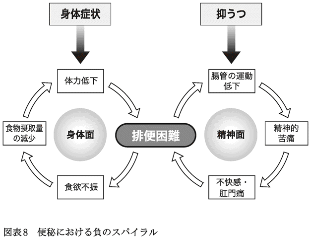
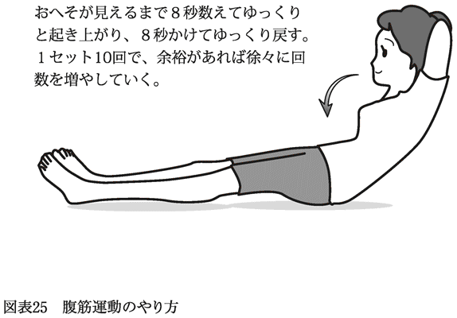

| 腸はぜったい冷やすな！ | |
| 松生 恒夫 | |
| (2012) | |
ebpaj-guide-1.1

私のクリニックには、便秘の方を専門に治療する「便秘外来」がありますが、毎年、一月から二月にかけての寒い時期になると患者さんが急増し、また症状を悪化させる方も非常に多くなります。
詳しくは本書で説明しますが、気温が下がり、体の表面温度が低くなると、交感神経が緊張して腸の働きを低下させることがわかっています。お腹、つまり腸を冷やしてしまうと、腸の調子が間違いなく悪くなるのです。
近年、大腸癌や難治性炎症性腸疾患（潰瘍性大腸炎やクローン病）などが大幅に増えてきていることが、テレビや新聞でも報じられています。大腸癌については、女性の癌死の一位、男性の三位となっています。これは日本人の腸内環境（腸内の細菌のバランスから見た腸の状態のこと）の悪化が影響しているといわれていますが、もう一つ、冷えの問題を無視することはできません。
いくら腸によい乳酸菌を含んだヨーグルトを毎日欠かさず摂っていても、冷え対策を怠っていれば、腸の症状の改善は望めないでしょう。冷えと腸内環境の両方をよくしてこそ、〝快腸〟な生活を送れるのです。
お腹の冷えは、何も冬に限ったことではありません。暑い夏の日中に外出先から帰って来て急に冷房の効いた部屋に入ると、お腹が冷えて腸の調子が悪くなったりしたことは、どなたにも体験があるのではないでしょうか。このように、お腹の冷えは、急に温度が低下する場合には、一年中、誰にでも起こりうると考えたほうがよいのです。
毎日の気温の変化が、気づかないうちに私たちの体に負担をかけ続けています。そのストレスが多くの病気のもとになっているといっても過言ではないでしょう。「いつでもお腹が冷える可能性がある」ということを前提として、全身の健康対策を考え、実行することがとても大切です。
病気は時代とともに変化するといいますが、私が医科大学を卒業した一九八〇年ごろは、腸よりも胃・十二指腸の病気の患者さんが圧倒的に多く、胃内視鏡検査ができれば消化器内科の医師はつとまりました。ところが、現在では腸の病気が年々増加の一途をたどり、大腸内視鏡検査ができないと、消化器内科の専門医としてやっていけない時代になっています。
腸の病気の増加はまだまだ続きそうです。とはいえ、腸の病気の予防法については、近年、少しずつ判明してきています。本書で取りあげる、正しい腸のケア方法を今日からスタートしてください。
その基本は、腸はぜったい冷やさないこと。
誰もが経験していることと思いますが、お腹がぬくぬくと温かいと、なんとなく幸せな感じがするものです。お腹の底から涌き起こる幸福感とは、こういう状態をいうのでしょう。
お腹が温かいとなぜ幸せな気分になるのかは、これから読み進めていただければ納得できるはずです。お腹が温まって冷えが改善し、腸の調子がよくなると、体全体が元気になって、ほかほかと幸せな感覚に包まれるのです。冷えの改善が快適腸生活、ひいては全身の健康に大いに役立ってくれることは間違いありません。
最後になりましたが、本書を執筆するにあたり、コーエン企画の江渕眞人氏、光文社新書編集部の古川遊也氏に大変お世話になりました。この場を借りてお礼申し上げます。
二〇一二年十一月
松生恒夫
目 次
第６章レシピ提供／横塚美穂
便秘の人は冷えている
私のクリニックには、便秘の人を専門に診る「便秘外来」があります。そこでの診察で痛感するのが、「冷え」を訴える患者さんがとても多いということです。便秘外来の慢性便秘の患者さんに質問すると、実に七〇％以上が冷えを認めているのです。
「秋と冬はお腹が冷えて、一日中腹巻きを欠かせない」
「冬、寝るときは手袋と靴下をはかないと眠れない」
「夏のエアコンがつらくて、会社ではずっとひざ掛けをしている」
といった訴えが主なものですが、体の部位では、お腹と手足の冷えが特に目立ちます。こうした冷えの症状が悪化すると、便秘もひどくなるのです。
ふだんは便秘などの症状がない人でも、真冬になると冷えてお腹が痛くなる、あるいは真夏になると水分をいくら摂っても便が硬くなったり、暑いところから急にエアコンの効いた部屋に入るとお腹が冷えて痛くなる、といった経験は誰にでもあるのではないでしょうか。
冷えと腸の関係で思い出されるのが、二〇一一年三月十一日に起きた東日本大震災です。この未曽有の災害は、さまざまな健康被害をも人々にもたらしました。その一つが便秘です。
当時、東北地方はまだ気温が低く、お腹が冷えることやトイレ不足、下剤不足などが原因で便秘になったり、もともとの症状が悪化したりする人が急増したのです。
阪神・淡路大震災時（一九九五年一月十七日）では、被災者の約四〇％が被災後に便秘を認めたそうです。冬の寒い時期だったので、お腹の冷えも大きく関与したものと思われますが、今回の場合はそれ以上だったようです。
大地震の発生から一週間ぐらいたったころ、ある新聞社から、簡単にできる便秘対策を教えてほしいという取材依頼がありました。そこで私は、とにかく冷えの解消が第一ということで、お腹を温かくして排便を促すために、カレー味のカップ麵の中にエキストラバージン・オリーブオイル（オリーブの実だけを原料とし、特に酸度の低い高品質のもの。以下、ＥＸＶ・オリーブオイルと略記）を入れて食べる方法を紹介し、新聞に掲載されました。
ＥＸＶ・オリーブオイルを加えるとカレーの味がマイルドになるだけでなく、食後にお腹がいつもより温まる感じがするのです。これは、カレーに加えて後述するＥＸＶ・オリーブオイルの持つ保温効果にほかなりません。さらに、ＥＸＶ・オリーブオイルそのものによる排便促進効果もあります。
これらのことからもわかるように、冷えと腸の健康は密接に結びついており、簡単にいえば、冷えると腸の具合が悪くなり、逆に温めると腸の調子がよくなるということなのです。
冷えとは何か
では、ここでいう「冷え」とは、どのような状態をいうのでしょうか。
冷えとは、そもそも東洋医学の概念です。同じ病態であっても、西洋医学には冷えという概念は存在しません。「冷えを治す」という考え方がないのです。
漢方医学の教科書によれば、冷えとは、
「身体の特定部位のみを特に冷たく感じ、耐えがたい場合」
「外界からの寒冷刺激による急激な温度変化により、冷えが症状として発現すること」
とされています。
東京女子医科大学附属青山自然医療研究所クリニックの班目健夫医師らは、体温の測定による冷えの定義を提唱し、
「本人の自覚症状とは無関係に、頭部、あるいは顔面を除く身体表面温度が脇下温（脇の下の温度）以下に低下した状態」
としています。これにしたがえば、脇の下の温度と冷えを感じる身体表面の温度に差があるほど冷えが進んでいるということができます。
脇の下は体温計で測定するときによく使われる部位ですが、それは脇の下が深部体温（体の内部の温度＝内臓の温度）を反映しているという理由からです。個人差はあるものの平均は三六・五～三六・七℃ぐらいとされています。
班目医師らによると、冷えを訴える人の場合、脇の下の温度は正常にもかかわらず、体の表面温度は最低で二五℃（手の指の指紋の部位）、衣類で覆われている腹部やおしりでも二八℃まで下がっている人がいるそうです。脇の下の温度と比較すると、これはものすごい温度差です。
では、西洋医学の文脈では、冷えはどのように扱われてきたのでしょうか。
西洋医学的には、冷えとは、
「一種の循環不全であり、血液の不足、または代謝の低下によって起こる熱産生不足である」
というふうに言い換えることができます。
つまり、血行不良によって起きる症状が冷えです。
血行不良になると、栄養も酸素も細胞に行き届きづらくなるために細胞の活性度が低下傾向になり、熱産生率も下がりやすくなって、結果として体温低下を招きます。
その結果、体内のさまざまな酵素の反応が鈍くなり、体の免疫反応や代謝が落ちると考えられています。このように、西洋医学から見ても、冷え、すなわち血行障害は、体に少なからぬダメージを与えるとみなされているのです。
冷えは体の防御反応
西洋医学には「冷えは重要な内臓器を守るための防御反応の一つ」という説もあります。
たとえば、冷気にあたって冷たいという感覚を得ることは、体の防御機能が正常に働いている証拠ともいえるのです。
つまり、寒冷刺激を受けると手や足などの末梢部の動脈が収縮し、その結果、冷たい感覚、すなわち冷えが生じます。これによって人体は熱の放出を防ぎ、さらに血液を胸や腹などの体幹部に集めることで、深部体温が低下することを防ごうとしているのです。
実は、さまざまな生命活動に必要な種々の酵素が最も活発に働く体内環境は三七・二℃といわれており、この温度が安定するように深部体温を維持することは生命活動にとって極めて重要です。
深部体温の維持には皮膚が重要な働きをしています。
皮膚が冷たい、温かいという感覚は、皮下に存在する「冷・温受容器」というレセプターで捉えるのです。冷たさを感じる冷受容器は一七～三六℃の刺激に反応し、温かさを感じる温受容器は三六～四七℃の刺激に反応します。それぞれの受容器が反応するピークの温度は、冷受容器が三〇℃、温受容器が四三℃だそうです。
外気温が低下しているときは、冷受容器が刺激を受けて末梢血管の冷却が起こり、これが脳の視床下部の体温調節中枢に伝わって体温調節中枢が働き、熱の放出を防ぐことになります。さらに体内では冷えに対抗しようとして、熱の産生を促進するようになるのです。一方、外気温が上昇しているときは逆の反応が起こることになります。
このように「防御反応」という見地に立てば、冷えは正常な生体の反応といえます。しかし問題は、その状態が続くことにあります。
冷えから回復できない現代人の体
健康な人は、たとえ一時的に体が冷えても、暖かい部屋に入り、あるいは衣類を着用して体が温まればまもなく改善します。
これは冷えのために収縮していた血管が拡張し、血流がよくなるためです。逆に暑いときには、汗を出して熱を放出し、体温を下げようとします。
このように、体にはもともと寒さや暑さに対応できる体温調節機能が備わっているのですが、現代人はこの機能に何らかの障害が起き、慢性的な冷え症から体調を崩している人が実に多く見られます。
この体温調節機能は、自律神経によってコントロールされています。正常な状態では、日中は交感神経優位で体温は上昇傾向なのですが、夜間は副交感神経優位となり、体温は低下傾向になります。
問題なのは、冷えに慢性的にさらされることです。この状態が続くと自律神経の働きが乱れ、さまざまな症状が現れるのです。
自律神経の不調で交感神経が強く働き過ぎると、心拍数が増加し、動悸や息切れが起こるようになります。
また、末梢の血管が収縮して血圧が上がり、頭痛や不眠を引き起こします。
逆に副交感神経が強く働くと心臓の鼓動の間隔が長くなり、末梢の血管が拡張することで血圧が低くなって、めまいや疲労感が強く現れることがあります。
このように、冷えによって、さまざまな病態が生じるのです。
この傾向は、特に現代の女性に多く見られます。
冷えやすい女性の特徴としては、次のようなことがいわれています。
①筋肉の量が少ないことや運動不足等で、基礎代謝が低く、消費するエネルギー量が少ない。
②体の表面積が比較的大きい。
③断熱材の役割を持つ皮下脂肪が少なく、放散する熱量が多い。
この三つから浮かび上がってくるのは、背が高くて手足が細く長い、ファッションモデルのような体型の女性です。これは最近の若い女性が求める理想のスタイルといえます。
また、女性全般にいえることは、月経前の黄体期（黄体ホルモンが分泌されている時期）には、ホルモンの関係で特に手足などの末端部が冷えやすくなります。そして、黄体ホルモン（プロゲステロン）が多く分泌されている時期は腸管運動が抑制されやすく、停滞腸や便秘になりがちです。
さらに、中年以降の女性は、更年期になるとホルモンバランスの乱れに加えて、加齢に伴う筋力の衰えと基礎代謝の低下によって冷え症になりやすくなります。基礎代謝が落ちるとエネルギーがつくりにくくなるため、寒さに弱い体になってしまうのです。
一方、男性で冷えを訴える人が増えてくるのも中年以降です。加齢と運動不足の影響で筋肉量が減少することで冷えを招きやすくなるのです。
また、過剰なストレスやビールなどの冷たい飲料の大量摂取も引き金になることがわかっています。
お腹の冷えは「内臓感覚」
とにかく現代人は、冷えが原因で何らかの障害が生じている人が実に多いことに驚かされます。さまざまな冷え対策グッズがよく売れていることから見ても、冷えを自覚する人がここ数年で急増していると推測されます。
腸を専門とする私の立場から、問題として特に強調したいのは、「お腹の冷え」です。
みなさんも、お腹が急に痛くなって下痢をしたときに、お腹が冷えているように感じたり、また、そんなときお腹に手をあてると、お腹の中が温まって楽になった経験があるはずです。
冬になるとお腹の周りはどうしても冷えてきます。そのほか、冷たいものを摂り過ぎてもお腹が冷えますが、これはまず内臓で知覚され、次に脳によってお腹の冷感として認識されます。
こうした体内の臓器（腹部、胸部、筋肉、骨格など）から生じる感覚を、「内臓感覚」と呼びます。
意識にのぼる内臓感覚としては、内臓痛、灼熱感、圧迫感、食欲、空腹感、口渇感、嘔気、尿意、便意、性感覚（性欲）などがあります。
便秘の人に多い腹部膨満感（お腹が張って重苦しい感じ）も内臓感覚といえます。
日常生活の中では私たちは内臓の感覚などあまり意識しないものですが、知覚しづらいレベルではあっても実際に心臓や肺、胃や腸などの臓器には感覚があって、何らかのサインを出しているのです。
話が少し横道にそれますが、英語でよく使われる表現に"got a feeling"があります。これは、日本語では「腹の底から来る感じ」といった意味です。私が大好きなビートルズの曲にも、"I've got a feeling～"という歌詞で始まる、その名も《I've Got A Feeling》という曲が収録されています。「内臓感覚」を表す言葉だといってよいと思います。
こうした内臓感覚のうち、最も気をつけたいのが「お腹の冷え」なのです。
冷えるとなぜ腸の異常が起こるのか
私はこれまでに四万件以上の大腸内視鏡検査を行ってきましたが、その経験から、患者さんの「お腹の冷え」について実感したことがあります。
通常の大腸内視鏡検査では、前処置として患者さんにポリエチレングリコール等の腸管洗浄液を約一五〇〇mlから二〇〇〇ml飲んでもらい、腸の中の便を全部排出させます。この洗浄液を服用すると、便は繰り返し排出されるようになります。
五～六回程度排便をして、排液の黄色い色が薄くなった状態になると大腸内視鏡を挿入する準備が整います。
しかしこの洗浄液は、ある程度冷やして飲まないと飲みづらいのが難点です。夏であればいいのですが、冬だと服用し終わった後に寒気を感じて、毛布を希望する患者さんもいるほどです。それくらい全身、特にお腹が冷えてしまうのです。
お腹、特に腸の冷えた状態では、「スパスム」（腸が収縮した状態を指す専門用語）が起こっており、大腸内視鏡を肛門から盲腸に向けて挿入する時に、挿入しづらくなります。
大学病院でも、先ほど述べたような腸管洗浄液を服用させての大腸内視鏡検査を行うのがふつうです。これは、おそらく日本全国の他の病院でも同様ではないかと思います。つまり、お腹（大腸）が冷えたまま検査を行っているのです。
私も他の施設で大腸内視鏡検査を行った際に、同様の状況下では、スパスムを起こしている人を多く認めました。腸が冷えるとどのような状態になるかをあらためて実感したのです。
冷えを改善した「微温湯浣腸」
この冷えの問題を改善したのが、かつて勤務していた横浜の松島病院大腸肛門病センター・松島クリニックや現在の私のクリニックで行っている、微温湯浣腸という方法です。
つまり、大腸内視鏡検査の前処置として、洗浄液服用後、検査の直前に微温湯である約四〇～四一℃前後、いわゆる人肌の温度のお湯（ぬるま湯）八〇〇～一二〇〇mlによる浣腸（洗腸の一種）を行うのです。
その利点は何より、温める効果によって冷えが改善され、腸が弛緩することです。結果、内視鏡を腸の奥に挿入しやすくなるのです。
もう一つの利点は、腸管洗浄液を服用して、五～六回排便があっても、検査時に大腸内が完全にきれいになっていない人がいますが、この微温湯浣腸を行えば、より腸管内がきれいになって、大腸内視鏡検査が行いやすくなることです。
患者さんによれば、この微温湯浣腸を行うと、冷えたお腹が温もって気持ちがいいそうです。
また、検査後に「便秘がなおった」「腸の状態がよくなった」という患者さんもいます。腸管洗浄液を使う場合、検査の最中に腹痛を訴える患者さんが結構多いのですが、微温湯による浣腸では、こうしたことはほとんどありません。
このようにメリットの多い方法なのですが、トイレの数が十分にないことや、手間がかかるなどの理由で、一般の病院ではほとんど行われていません。私が以前所属していたころの大学病院では、微温湯浣腸という言葉すら聞いたことはありませんでした。
いずれにしろ、お腹（大腸）をダイレクトに温められる微温湯の高圧洗腸は、冷えた腸をある程度もとの状態に戻す作用もあるのです。
このような観察結果からも、お腹（大腸）が温まると楽になり、逆に、冷やすと腹痛の原因になったり、排便障害（便秘）を招きやすくなるということがおわかりいただけるでしょう。
体温と免疫の関係
「体温を一℃上げると免疫機能が三〇％上昇する」という説が、いろいろな書物でとりあげられています。驚くべき上昇率ですが、これはそもそもどういう意味なのでしょうか。新潟大学教授である安保徹先生の説を参考に、簡単にご説明しましょう（『体温免疫力』ナツメ社刊を参照）。
まず、免疫力の主体となるのが血液中の白血球です。白血球は顆粒球と、リンパ球に分けられますが、顆粒球は侵入した細菌・異物などを消化分解し、リンパ球はそれらに対する免疫作用を持っており、前者は交感神経の、後者は副交感神経の支配を受けています。
ところが、交感神経と副交感神経のバランスが崩れ、交感神経ばかり刺激されてその緊張が続くと、顆粒球が増加し、一方、免疫機能を持つリンパ球の割合が少なくなってしまいます。この状態が持続すると低体温になり、やがてリンパ球の割合が三〇％以下に減少してしまうといわれているのです。そして低体温状態から脱して、体温が上昇するにつれ、リンパ球の割合も高くなっていくのだそうです。
このリンパ球には、胸腺でつくられるＴ細胞、Ｔ細胞の指令を受けて抗体（免疫グロブリン）をつくるＢ細胞、癌細胞を攻撃する細胞として知られているナチュラルキラー細胞（ＮＫ細胞）などが存在するので、リンパ球が優位になれば、当然ＮＫ細胞も増加すると考えられることから、ナチュラルキラー活性（生体の免疫力の指標。細胞障害活性ともいう）、つまりは免疫力も上がるということになります。
したがって、体温を低下させなければ免疫機能は落ちない、すなわち体温を上げれば免疫力は上がると安保先生はご指摘されているのだと思います。
「ショウガで体温が上がる」は本当？
多くの健康本では、「○○で体が温まる」ということは書かれていても、実際に体温計を使って確かめてはいないものがほとんどのようです。
そのいい例がショウガ（ジンジャー）です。ショウガ湯を飲むと体が温まるとよく書かれていますが、実際に何度上昇するかという具体的な記載はありません（拙著でシナモン・ジンジャーティーで摂取前・摂取後の体温を測定しているくらいです）。
また、「運動すれば体温が上昇する」とも書かれていますが、実際、運動前と運動後でどの程度体温が上昇するかということは、一言も触れられていないのです。
ショウガ湯を飲むことも、運動することも誰でも簡単にできるので、その前後に体温計を使って実際に測定すればすぐ数値が出るはずですが、こうした記録はまずありません（測定しようともしていません）。実際に測定を行ったというデータは、私の知る範囲内では日本薬科大学の丁宗鐵教授が行った、カレーを摂取した前後の体温変化のデータのみです。
では、ショウガ湯で体温が上昇するのは間違いないのでしょうか？
そこで、私はシナモン・ジンジャーティー（お湯にショウガとシナモンを加えたもの）を摂取前後の体温変化を測定しました。その結果によると、たしかに体温の上昇は見られましたが、体温が上昇するのはショウガの体温上昇効果というよりも、お湯で上昇した体温がショウガに含まれるジンゲロールの持つ体温保持効果によって冷めにくくなっている、といったほうが正確だと考えています。
このことから、ショウガの効果で重要なのは、その保温効果であることがわかります。
一方、私は、腸の健康が気になる人にはショウガよりもＥＸＶ・オリーブオイルをすすめています。というのは、その保温効果に注目すべきものがあるからです。ここからは、ＥＸＶ・オリーブオイルを例に、「体を温める」とはどういうことなのかを、具体的に見ていくことにしましょう。
欧州機関が認めた効能
オリーブオイルはその成分のほぼ一〇〇％が脂質で、そのうち主な成分である脂肪酸は九五％、コレステロールは０％となっています。
また、脂肪酸の構成で見ると、オレイン酸七七％、リノール酸が七％程度含まれています。
このように、オリーブオイルにはオレイン酸が豊富に含まれているのが特徴で、そもそもオレイン酸とは、語源をたどると「オリーブオイル由来の脂肪酸」という意味になります。
このオレイン酸には、ＬＤＬコレステロール（悪玉コレステロール）を減らす作用、ＨＤＬコレステロール（善玉コレステロール）を維持、あるいは上昇させる作用などがあり、動脈硬化にも効き目があるといわれています。特にアメリカのＦＤＡ（アメリカ食品医薬品局）では、糖尿病性動脈硬化症に対してオリーブオイルが有効であることを認めているくらいなのです。
そして最近、大きな話題になっているのが、ＥＸＶ・オリーブオイルに含まれるポリフェノールの一種、オレウロペインの働きです。これは、ＥＸＶ・オリーブオイルの独特の辛味の元になっている成分です。
二〇一一年、ヨーロッパにおける食品の栄養・健康表示を評価して統一化している組織である欧州食品安全庁（ＥＦＳＡ）が、ＥＸＶ・オリーブオイルにヘルスクレーム（健康強調表示。ある食物が特定の病気に効くとパッケージに表示すること）を与えました。
オレウロペインの抗酸化作用を高く評価したのです。
太古から知られる便秘改善効果
このように、特筆すべき働きをいくつも持っているオリーブオイルですが、もう一つ強調しておきたいのが便秘改善効果です。
オリーブオイルは、紀元前から、排便をスムーズにして便秘を改善してくれる効果があるものとして利用されてきました。イタリアなどでは、現在でも、子どもの便秘予防にティースプーン一杯のオリーブオイルを摂らせているくらいです。
この便秘改善効果に関して、アメリカの学者であるマイケル・フィールドが行った興味深い実験があります。
動物の空腸（小腸の一部）にオリーブオイルの主成分であるオレイン酸と、これまた便秘対策に昔から使われてきたヒマシ油の主成分であるリシノール酸を流して（灌流実験）、食べ物の消化・吸収をつかさどる小腸でそれぞれがどのように吸収されるのか、その数値を比較したのです。
三〇分後の数値を見ると、オレイン酸のほうがリシノール酸と比べて小腸に吸収されにくいという結果でした。つまり、オレイン酸を含むオリーブオイルは短時間では小腸で吸収されにくいのです。
この「吸収されにくさ」こそ、オリーブオイルが便秘によい理由の一つです。比較的多めのオリーブオイルを短時間で摂取すると、小腸であまり吸収されずに腸神経系を刺激して腸管運動を促進し、また食物残渣（残りかす）に混じることで腸内での便のすべりがよくなる、と考えられるのです。
腸神経叢に作用
私も以前、オリーブオイルの効果を確かめるための調査をしたことがあります。
下剤を継続的に使用していた慢性便秘の患者さん六四人に、オリーブオイルを毎朝三〇ml摂取していただいたところ、なんとほぼ全員の六三人が下剤の使用を中止、または下剤の減量が可能となりました。
特に便が硬かった患者さんでは、普通の便になるまで改善できたのです。
私は、以上のことから便秘の患者さんにとってオリーブオイルによる食事療法は有効であると確信し、日常の臨床現場でも取り入れるようになりました。腹部膨満感などがある停滞腸の人では、ティースプーン二杯程度のオリーブオイルでも効果が期待できます。
特に、センナ、大黄、アロエ等のアントラキノン系の下剤を使用している方に、オリーブオイルはおすすめです。
実は、アントラキノン系下剤の特徴として、服用を中止すると再び便秘になるため、どうしても継続的に使用しがちになり、やめては便が出なくなってさらに薬を多く飲む、という悪循環で次第に服用量が増加する傾向があります。
その結果、大腸メラノーシス（大腸黒皮症）が現れて腸管運動を妨げ、排便困難をさらに増悪させることがわかっています。大腸メラノーシスとは、大腸粘膜下にメラニン様の色素が沈着し、腸神経系に障害を及ぼす病気です。
このような大腸メラノーシスを認めるような慢性便秘症の患者さんに、オリーブオイルを摂取してもらうと、症状が改善し、下剤服用量が減る患者さんが少なくありません。
つまり、オリーブオイルは、腸神経系に対しても確実に作用しているということがいえるのです。
広く均一に拡張する油膜
ところで、お腹を簡単にしかも早く温める方法として、まず考えられるのがお湯（白湯）を飲むことではないでしょうか。寒い日に外から帰ってきたときに温かいお湯を飲むと、体がポカポカしてくることは多くの人が経験しているでしょう。
ただ、これだけだと効果は一時的なものになってしまい、なかなか排便促進につながらない場合もあるでしょう。そこで、お湯にＥＸＶ・オリーブオイルを加えてみるのです。
ＥＸＶ・オリーブオイルも、そのまま摂るだけでは体温は上昇しません。熱いお湯と一緒に摂ったときに初めて、その保温効果を発揮するのです。
ＥＸＶ・オリーブオイルは、他の食品と一緒になるとおいしく摂れるのですが、ＥＸＶ・オリーブオイルだけだとおいしくないと感じる人が多いでしょう。それでは、どうすればいいかというと、話は簡単で、ＥＸＶ・オリーブオイルをお湯に入れる、つまりＥＸＶ・オリーブオイル湯を飲むといいのです。
これだと、ＥＸＶ・オリーブオイルの味になじんでいない人でも無理なく摂れます。お湯とＥＸＶ・オリーブオイルの相乗効果で、体が温まると同時に排便促進効果も期待できます。
実際に試していただけるとわかりますが、ＥＸＶ・オリーブオイル湯の場合は、お湯だけを飲んだときよりもお腹が温かい感覚が持続するように感じられるはずです（ココアとオリゴ糖を入れるとさらに飲みやすくなります）。
以前、日清オイリオグループ株式会社（以下、日清オイリオ）の商品開発室長で、知人である鈴木俊久氏（オリーブオイルテイスターとして有名）に相談し、研究所で実験をしていただいたことがあります。
結果は驚くべきものでした。三〇〇mlのビーカーに八〇℃の白湯（一八〇ml）と、同量の八〇℃の白湯に小さじ一杯（約五ml）のＥＸＶ・オリーブオイルを入れた群を比較した場合、五〇分後の温度に七・四℃もの差をつけてＥＸＶ・オリーブオイルを入れたほうが温かかったのです（図表１）。
これは、ＥＸＶ・オリーブオイルの保温効果によるものと考えられます。保温力はサラダ油にも存在しますが、データが示すように、ＥＸＶ・オリーブオイルのほうが高い保温力を持つのです。
そして、このＥＸＶ・オリーブオイルの保温効果は、オイルが油膜となって均一な厚さで広がることで保たれると考えられるのです。
これまで誰も指摘していない結果だったので、私と日清オイリオの連名で、特許申請することになりました。その後、私もさまざまな油膜の保温効果について調べていますが、現在までこれに言及した文献にはお目にかかっていません。
また、特許申請する前に日清オイリオの研究所で油膜の広がり方の測定実験もしてもらいました。
数字が示すように、油膜の広がり方の差は歴然としています（図表２）。ＥＸＶ・オリーブオイルのみが油膜が薄く拡張し、ブレンドオリーブオイル、精製オリーブオイル、キャノーラ油は、ほとんど拡張しなかったのです。
この性質が保温に大きく関与していることは間違いなく、これが新発見となる部分でした。ＥＸＶ・オリーブオイルが持つ特別なパワーといえるのです。
病気でない病気？ 停滞腸
私が勤務していた横浜の松島病院大腸肛門センター・松島クリニックで、排便が正常な人の自覚症状に関するアンケート調査を行ったところ、驚くほど多かったのが、腹部膨満感（お腹の張り）という答えでした。
では排便があるのに、なぜお腹が張るのでしょうか。
これは、実は排便が十分でなく、残便があるために、お腹のガスが排出しづらいといった状況で起こるのではないかと考えられます。
たとえば、排便は毎日、あるいは一日おきに少量ずつあるものの、お腹の張りを訴える患者さんがいます。このような人たちは便秘とはいえませんが、何らかの原因によって腸の運動が停滞しているために起こる症状、つまり、お腹が張るなどの症状を持っています。
このように、排便はある程度あるものの、腹部膨満感、残便感などがあり腸の運動が低下している状態の腸を、私は「停滞腸」と命名しました。
この停滞腸の概念を導入すると、腸の動きが停滞している、つまり機能が衰えている人がとても多くなってきていることがわかります。日本人の腸がいかに弱ってきているかが痛感されるのです。
停滞腸の原因はさまざまですが、誰でも可能性があるという意味では、運動不足による冷えをまずあげなくてはなりません。
運動不足で体を動かさないと体が冷えがちになり、交感神経が優位になる結果、腸管の運動が抑制されるのです。加えて、交感神経が優位になると血管が収縮して血行が悪くなり、腸に行く血流も減少するといった要素も加わって、腸管の運動が抑制されると考えられます。これがまさに停滞腸です。
また、停滞腸は、体が急に冷えたときや真冬の寒い時期（最高気温が五℃以下）に起こりやすいことがわかっています。
停滞腸や慢性便秘を含む腸の病気の原因は、食生活の問題やストレスであることは以前から知られていましたが、冷えの影響という指摘はありませんでした。体が冷えると、さまざまな腸の疾患が起きやすいのです。
停滞腸は、後述するように便秘予備軍であり、便秘は大腸癌をはじめ、恐ろしい腸の病気の引き金にもなります。
たかが停滞腸、たかがお腹が張る、ではすまされないのです。
次に停滞腸のチェックリストを載せておきますので、ぜひチェックしてみてください。
〈停滞腸チェックリスト〉
①野菜はあまり食べない
②果物はあまり食べない
③外食が多い
④水分の摂取量が少なめである
⑤一日三食食べないことがよくある
⑥食後、下腹部がポッコリと出やすい
⑦むくみやすい
⑧冷え症である
⑨真冬になるとお腹の症状が悪化する
⑩それほど飲み食いしているわけではないのに、なぜか瘦せない
⑪ダイエットをしているのに下腹だけポッコリと出ている
⑫何となく、いつもお腹がスッキリしないし、体も重く感じる
⑬便が出た後も爽快感がない
⑭あまり体を動かさない、歩かない
⑮最近ストレスを感じることが多い
この中で、四～五項目当てはまるものがあれば軽度の停滞腸、六～八項目であれば、中程度の停滞腸で注意が必要、九項目以上であれば重度の停滞腸である可能性が高いでしょう。
停滞腸がもたらすさまざまな症状
では、停滞腸が起こると全身にどのような影響を及ぼすのでしょうか（図表３）。
まず、停滞腸になるとお腹が張ってきて、残便感が生じます。腸内の便が完全に排泄されない状態です。この状態が続くと腸内の便の腐敗が進み、善玉菌が減少し、一方で悪玉菌が増加傾向になります。
そして、老廃物が血流の流れに乗って全身にわたると、肌荒れ（便秘が続くとインドール、スカトール、アセトン体などの老廃物が発生し、皮膚に悪影響を与える）、冷え（新陳代謝が衰え、細胞の活動や血流が滞り、皮膚が冷えやすくなる）、肥満（新陳代謝の低下によって、脂肪が燃焼しにくくなり、太りやすくなる）、体臭（アセトン体の影響で肌荒れが起きるとともに、体臭が強くなることもある）が認められるようになってきます。そして、最終的に便秘（腸の運動が低下して老廃物が溜まりやすくなる）が起こってくるのです。
停滞腸の患者さんがよく訴えるのが腹部膨満感（ガス腹）です。
腹部膨満感は、お腹にガス（オナラ）が溜まるということから、単にオナラが出やすくなる症状を連想するかもしれませんが、それだけなら日常生活に大きな支障はないでしょう。しかし腹部膨満感は、逆にそれが排出されにくくなるという、侮れない症状なのです。
お腹に溜まるガスの量は二～三ℓ、つまり大型ペットボトル二本分ぐらいにもなるのです。これだけ溜まれば、お腹が張って苦しくなるのも当然といえます。
また、下腹もポッコリ出ないはずがありません。スタイルを気にしてどんなにダイエットしたところで、お腹にガスが溜まれば、ひとたまりもないのです。
大腸癌が癌死の上位に
日本は世界でも最高水準の長寿国であるといわれてから、かなりの時間が経過しました。二〇一一年の日本人の平均寿命は、女性が八五・九〇歳で世界二位、男性が七九・四四歳で世界第八位です。
前年と比べると女性は一位から、男性は四位から後退しています。東日本大震災の影響も指摘されていますが、医療の現場から見ていると、これは一時的な傾向とは思えないのです。
私の専門は、大腸内視鏡検査や胃内視鏡検査を主体とする消化器内科専門医で、これまでに四万件を超える大腸内視鏡検査を行ってきましたが、程度の差はあれ、特に腸の健康をそこなっている方が、近年、目だって増えてきているのです。
それは、何よりも数字にはっきりと表れています。
かつて日本人の死亡原因の第一位は脳血管障害でした。それにかわって癌死がトップになってからしばらくの間は、胃癌が癌死のトップを占めていました。
ところが、一九六〇年代には非常に少なかった大腸癌が次第に増加し始め、二〇一〇年の統計では、ついに癌死の中で女性では一位、男性では三位になるまで増加したのです（図表４）。
五十年前には考えられない結果です。
さらに、これまた一九八〇年以前には非常に少なかった、若い人に多く発症する難治性炎症性腸疾患である潰瘍性大腸炎やクローン病なども激増し、二〇一〇年には潰瘍性大腸炎の患者数は一一万七八〇〇人以上、クローン病の患者数は三万一六〇〇人以上と、年々一〇〇〇人単位での増加を認めているのです。
日本人の七五〇万人が便秘！
また、慢性の便秘で悩んでいる人も多数います。
平成二十二年度の国民生活基礎調査では、人口一〇〇〇人あたり女性で五〇・六人、男性で二四・七人が「便秘である」と回答しています。平成十年度の同じ調査では、女性四六・七人、男性一八・六人だったので、ここでも腸の具合が悪い人が増加していることがわかります。
単純に計算すると、およそ五〇〇万人の人が便秘であるということになりますが、この数値には子どもは含まれていませんし、また恥ずかしがって自分は便秘であると回答しなかった人や、便秘の自覚がない人もかなりの数にのぼると思われます。
実際には、この約一・五倍、七五〇万人くらいの人が便秘ではないかと推測されるのです。先ほど述べた停滞腸の人も入れると、おそらく一〇〇〇万人を軽く超えるのではないでしょうか。
このように、一九六〇年代までにはあまり存在しなかった腸の病気が現代では激増し、生活習慣病の一つとまでいわれるようになってきました。というのも、大腸癌や潰瘍性大腸炎、クローン病などの疾患は、環境因子、特に食生活が大きく関与しているのではないかと考えられているからです。
健康は、幸福な人生を送るための条件の一つです。現代人にとって、その基本を脅かすのが、これまであげたようなさまざまな腸に関する疾患といえます。
あとで詳しく紹介しますが、「脳腸相関」といって、腸と脳はお互いに影響を及ぼし合うことがわかっており、腸が健康であれば、お腹だけでなく頭もスッキリして、逆に、脳の状態がよければ腸の病気の予防にもつながるという好循環が考えられるのです。
腸の長さは数メートル！
そこでまず、最近の研究成果などもまじえながら、腸がいかに大切な臓器であるかを簡単におさらいすることにしましょう。
腸は口から始まる消化管の最後尾に位置し、消化・吸収・排泄を行う機能を持つとても重要な器官です。
消化管は、口、食道、胃、小腸ときて、最後の臓器が大腸です。つまり、「口と腸はつながっている」ともいえるのです。
こう考えると、たとえば、熱いものをいきなり口に入れると口の中が火傷（炎症）するように、食べたものが腸の状態に直接影響を与えるということは、とてもリアルにイメージしていただけるのではないでしょうか。
さて、腸は小腸と大腸に大別できる消化管です。消化管は頭頚部から胸、骨盤に至る長い器官であり、特に腸は胸の下から骨盤内にかけておさまっているため、複雑な形で存在します（図表５）。
胃に続く小腸は十二指腸→空腸→回腸と続き、約六～七ｍに及ぶ管状の臓器です。それに続く大腸は、盲腸→上行結腸→横行結腸→下行結腸→Ｓ状結腸→直腸と、小腸を取り囲むような形態になっています。腸の内面は、粘膜に覆われ、外側は平滑筋で包まれています。大腸の長さは約一・五～二ｍで、その人の身長とほぼ同じです。つまり腸の長さを合計すると、約七・五～九ｍにも及んでいるのです。
腸は食べたものを滞りなく運びながら、小腸で主に消化と栄養分・水分の吸収を、大腸で水分の一部の吸収と老廃物、つまりは食物の残渣の排泄を行います。
この際、小腸と大腸は、食べたものを運ぶために、独自の分節運動（食物の残渣を撹拌する運動）と、蠕動運動（腸の内容物を肛門のほうへ送り出す運動）を行っています。
体内には腎臓、肝臓など、ほかにも溜まった老廃物を処理する器官はありますが、最も多くの老廃物を処理しなければならないのが、消化管の最終器官である大腸なのです。
「腸内環境」とは何か
ところで、こうした機能面から見た腸の役割以外に、最近話題になっているのが「腸内環境」という考え方です。耳慣れない言葉かもしれませんが、「腸内環境」とは、腸内の細菌のバランスから見た状態のことをいいます。
先ほども述べたように、人体の腸の長さは約七・五～九ｍもありますが、内壁には無数の細かい襞があり、広げるとテニスコート一面にもなります。この腸内の襞の中に、約一〇〇種類、計一〇〇兆個もの細菌（腸内細菌）が存在するのです。
腸内細菌の主な種類は、善玉菌（乳酸菌やビフィズス菌など）、悪玉菌（ウエルシュ菌など）、日和見菌（善玉にも悪玉にも属さない菌）の三つで、これらの腸内細菌が腸内の環境を保っています。
三種類の菌の割合は、一般的には、善玉菌二〇％、悪玉菌一〇％、日和見菌七〇％、というのがバランスのいい状態とされていますが、日和見菌は、その名のとおり状況に応じて善玉菌に加勢したり、悪玉菌のほうに傾いたりします。
腸内細菌のバランスはけっして安定的なものではなく、不安定な要素をはらんでいるのです。
腸は人体最大の免疫器官
最近の研究で、腸内細菌が腸管免疫系に作用することがわかってきました。
免疫とは、体にダメージを与える物質から生体を守る仕組みです。
人間の体に備わっている免疫機能は、体内に病原性細菌やウイルスなどの異物（抗原）が入ると、自己防衛のために抗体をつくります。この抗体をつくるのがリンパ球で、全身のリンパ球のなんと六〇％以上が腸管（小腸から肛門までの管状の器官）に集中していることがわかっています。
つまり、抗体全体の六〇％が腸管でつくられており、腸管は、人体最大の免疫器官であるといってよいのです。
これらのことから、腸内環境を悪化させると、全身の免疫力の低下につながることがわかります。言うまでもなく、免疫力の低下は病気の原因となるわけですから、腸内環境を整えておくことは、まさに健康の要といってよいのです。
腸管免疫系の大きな特徴は次の二つです。
①危険な病原細菌やウイルスを排除する
②食品や腸内細菌などの安全なものに対しては寛容で、これらは排除しない
これらの二つの働きが健全であれば、腸内の免疫系は健康的に維持されているというわけなのです。
大腸を支配する二つの神経
大腸は自律神経によって支配されています。自律神経とは、全身の血管や内臓等の働きを無意識のうちに調節している神経のことです。大腸の場合、特徴的なのは、外在性の自律神経（交感神経、副交感神経）と、独立した内在性の腸神経叢によって二重に支配されている点です。
腸管については、盲腸から結腸の右三分の一までの部分は、交感神経としての内臓神経と、副交感神経としての迷走神経が支配しています。一方、この部位より肛門側、つまり左側三分の二の結腸の部位では、交感神経として下腹神経と、副交感神経として骨盤神経が支配しています。
腸管の運動は、交感神経によって抑制的に、副交感神経によって亢進的に働きますが、特に副交感神経の影響が大きいといわれています。
こうした神経の支配下で、胃・結腸反射によって大蠕動が起こり、結腸から直腸に便が移行して直腸に便が貯留すると、直腸壁に分布している骨盤神経を経て脊髄、大脳へ興奮が伝えられ、内臓感覚である便意が起こる、というのが排便の仕組みです（図表６）。
これらの中枢神経系とは別に、腸管の粘膜を何らかの形で刺激することで、消化管運動を起こさせることもできます。これが腸神経叢の働きです。
「腸は第二の脳」といわれる理由
一九八〇年代、アメリカのコロンビア大学医学部の解剖・細胞生物学教授マイケル・Ｄ・ガーション博士が発表した「腸は第二の脳である」という学説は、一大センセーションを巻き起こしました。重要な神経伝達物質の一つであるセロトニンが、腸の蠕動運動の発火点となる物質であることが明らかになり、これをきっかけに腸神経叢がセカンド・ブレインとして脚光をあびることになりました。
それまでの、体のあらゆる器官をコントロールしているのは「脳」であるという常識が覆され、腸の中にも一部脳と同様の機能があることが証明されたのです。
つまり、腸はただ「便が通過するための臓器」ではなく、脳に次ぐたくさんの神経細胞があることがわかってきたのです。
腸の神経細胞は、独立したネットワークで他の消化器官と協調して働き、また他の臓器にも直接指令を出しています。
脳には一五〇億個以上の神経細胞があり、ここから指令を出すことによって全身をコントロールしていますが、腸にも一億個以上の神経細胞があります。一方、脳とつながる腸の神経束は約二〇〇〇本しかありません。
つまり、腸自身が脳とはつながらない独自の神経ネットワーク（腸神経叢）を持ち、自律神経系とは独立して腸管を支配しているのです。だから、腸は「第二の脳」なのです。
また、小腸・大腸を合わせた腸の中には、脳と同じように神経系や内分泌系の組織が存在し、その数はほかの体内の臓器の中でもダントツに多く、脳に次いで第二位となっています。このことも「第二の脳」といわれるゆえんです。
腸の中にある多数の神経細胞は、神経叢（神経の集合体）として腸管の中にあります。一見薄く見える腸管ですが、この内部はいくつかの筋層から構成されており、それぞれの筋層間にもマイスナー神経叢（腸管の粘膜下にあり消化管壁などへの刺激を感知する神経の小集団）、アウエルバッハ神経叢（腸管の輪状筋層と縦走筋層の間にある神経の小集団）といった神経叢が存在しています。
腸管はこれらの神経叢とリンクしながら活動しており、こうした神経叢のネットワークが腸神経系、いわゆる第二の脳と呼ばれているものの正体なのです。
日本人の食生活は激変！
このように人体にとって非常に重要な役割を担っている腸が、現在、危機的状況に陥っています。
なぜ、このような事態になったのでしょうか。
日本人の食生活は、ここ四十年間で激変しました。このことが腸内環境に多大な影響を及ぼしたことは否定できません。特に腸への影響が大きい食物繊維、脂質、乳酸菌の摂取状況に大きな変化が見られるのです。
国の統計によると、一九五〇年代と二〇〇四年とを比較した場合、日本人の一日の食物繊維の平均摂取量は、約二五ｇ前後から一三・九ｇへと、ほぼ半分に減ってしまいました。
逆に脂質の摂取量は、一日平均二〇～二五ｇ前後であったのが、現在では五〇～六〇ｇまで倍増しています。中でも動物性脂肪の摂取量が著しく増加しています。
乳酸菌については、その種類に着目して摂取量の変化を見ていく必要があります。これはカゴメ株式会社総合研究所の報告ですが、一九六〇年代までは植物性乳酸菌として摂取していたものが、一九七〇年代以降は減少し、これに反して動物性乳酸菌の摂取量が増加しています。植物性乳酸菌と動物性乳酸菌の摂取量は、一九九〇年には約一対一となり、現在では一対二にまでなっているのです。
ここで乳酸菌について簡単に説明しておきましょう。
乳酸菌とは、糖を分解して乳酸をつくる細菌の総称です。ヨーグルトやチーズなどの乳製品や乳酸菌飲料、キムチや味噌などの発酵食品に多く含まれています。
主にヨーグルトやチーズのように乳（動物性のもの）に生育する乳酸菌を動物性乳酸菌というのに対して、主に漬物や味噌、しょうゆ、酒など野菜や大豆などの植物性の発酵食品に多く生育するのが植物性乳酸菌です。植物性乳酸菌は、乳酸菌の中でも特に生命力が強く、胃で死滅することなく、生きたまま腸に届きやすいことがわかっています。
動物性乳酸菌を含むヨーグルトは、昭和三十年代までの日本の一般家庭ではあまりなじみはありませんでした。一方で植物性乳酸菌を含む漬物や味噌、しょうゆなどは現在よりも多く摂られていました。昭和三十年代ごろまでは、日本人の大腸癌、炎症性腸疾患（難治性である潰瘍性大腸炎、クローン病）等の罹患率は低かったことから考えると、当時の食生活で日常的に摂取されていた生きたまま腸に届く植物性乳酸菌が、それまでの日本人の腸を守っていたことが推測されるのです。
このように、日本人の食生活において、とりわけ腸内環境に大きな影響を与える食物繊維、脂質、乳酸菌という三つの食事性因子が大きく変化してきており、このことが大腸癌の死亡率を急激に押し上げ、便秘や停滞腸に悩む人を蔓延させる大きな要因になっているのです。
そもそも便秘とは？
ところで、「最近ちょっと便秘気味で......」というようにふだんから何気なく使われている「便秘」という言葉ですが、正確にはどういう状態のことをいうのでしょうか。
「毎日排便がなければ便秘」と思っている人も多いかもしれませんが、医学書や医学専門誌を調べてみると、実は、便秘の定義は明確にされていないのです。
大腸の専門医には、
「排便が二～三日に一度あって、特に自覚症状がなければ、便秘とはいわない」
という共通認識があります。つまり、排便が二～三日に一度の人でも、何も自覚症状がなければ便秘ではないのです。
ただし、腹部膨満感や残便感といった自覚症状を伴っていれば、便秘というわけです。
ここで重要なのは、旅行などに出かけて、ちょっとした緊張感を伴うストレスで排便が困難になってしまう急性の便秘と、たえず自覚症状を伴っている排便障害である慢性便秘とは、分けて考えなければならないということです。
というのも、急性の便秘は、生活環境が元に戻ってストレスなどが消失すれば改善しますが、慢性の便秘の場合はなかなか改善しません。本書で問題にしたいのは、この慢性の便秘です。
慢性便秘には、何らかの病気があって起こる症候性便秘と、特に病気はなく、生活習慣などが原因で起こる常習性便秘があります。慢性の便秘のほとんどは後者です。一方の症候性便秘の代表的なものは大腸癌によるものです。ですから、突然始まった便秘には注意が必要です。
松生式便秘分類法
そのほかにも分類の仕方はあるのですが、実際に臨床の立場から見ると、こうした分類が個々の患者さんにきちんと当てはまるとは限りません。
そこで私は、便秘がなぜ起こるのかということをある程度明確にしたうえで治療すべきだという観点から、障害が予測できる部位と原因別に、新しい便秘の分類方法を考案しました。それは、小腸、結腸、直腸・肛門、消化管内容物、ストレス、という五つのカテゴリーを用いる方法です。
たとえば、排便を我慢しているうちに便意が弱くなったり、消えてしまうタイプの便秘は、直腸・肛門に障害があると考えられます。
また、先にも触れたように、大黄・センナ・アロエ等のアントラキノン系の刺激性の下剤を連用していると、大腸メラノーシス（大腸黒皮症）を起こして腸神経叢に異常を来し、結腸の動きがますます悪くなって便秘が悪化します。このタイプは結腸が障害を受けているケースです。
さらに炭水化物抜きダイエットや朝食抜きダイエットで、便をつくるだけの十分な食事量（食物繊維量）を摂取しないため便秘になっている人は、消化管内容物に原因があるのです。
このように、どこに障害があるのかがわかれば、治療しやすくなります。また、便秘の治療薬はただ便を排出させるだけでなく、ある薬は直腸に効き、ある薬は結腸に効くというように、作用する部分が分かれています。
したがって、どこに障害があるのか判明すれば、薬の副作用を最小限に抑えながら効率よく治療することができるのです。私は、この分類法が臨床的には最も有益だと思っています。
便秘がひどくなると...
便秘が深刻になってくると、次のようなさまざまな症状が出現します。
腸内で悪玉菌が増加し、腐敗や発酵が起こるため、ガスが発生しやすくなります。発生したガスは、硬い便にふさがれて排出されずに腸内に溜まるため、お腹の張り、腹部膨満感や痛みが起こります。
排出されないガスは体内に吸収され、結果的に肌荒れや、吹き出物、体臭などにつながることもあります。また、横行結腸に溜まったガスが胃を圧迫し、食欲不振、吐き気、胸焼けなどを起こす可能性があります。
また、便秘がひどくなると、頭痛や肩こりの原因になるともいわれています。
さらに便秘は肛門にも大きな影響を与えます。肛門はもともとうっ血しやすい場所なので、硬い便を押し出すために強くいきむことによって、痔になりやすくなります。
そして忘れてならないのは、大腸ポリープや大腸癌といった重篤な病にもつながり得ることです。
便秘になる一〇の要因
便秘症だという人も、生まれつき便秘だったわけではありません。まず軽症の便秘になり、それが徐々に悪化していったのです。つまり、腸内環境が悪化した結果なのです。それにはいったいどんな原因があるのかを考えてみましょう。
まず、背景として日本人の食生活の欧米化（特に肉食、乳製品を多く摂る北ヨーロッパ、北アメリカで見られる食文化に近づくこと）が大きく関係していることはまちがいありません。欧米食特有の高タンパク質、高脂肪の食事が腸内環境に悪影響を及ぼしていると思われます。
さらに、以下のような具体的な要因が考えられます。これらには自覚すれば簡単に改善できるものも含まれていますので、一つずつ解説していきます。
①温度の変化による不調
私のクリニックの「便秘外来」に来院する患者さんは、毎年、一～二月の気温の低い時期と八月ごろの暑い時期に発症、あるいは悪化する人がとても多くいらっしゃいます。つまり、便秘の要因としては温度も考えられるということです。
一～二月に便秘が悪化するのは、すでにおわかりのように冷えが原因です。気温の低下によって手足や全身が冷えることによって末梢血管が収縮し、交感神経が優位になるため、腸管運動の抑制につながりやすくなるのです。つまり、冷えによって起こるのです。
また血行が低下すると、腸に移動する血流も低下しやすくなるので、腸管運動が抑制されやすくなります。さらに、この時期は水分をあまり摂らなかったり、寒いのであまり外へ出ず運動不足になりがちになるなど、いくつもの因子が重なって便秘が増悪することになります。冷えは便秘の人にとっては大敵です。
八月ごろに便秘が悪化するのは、一つには、気温が高くなり、多量の汗が出るにもかかわらず、それに見合うだけの水分を摂らないことが原因です。結果、大腸に移行する水分が少なくなり、便が硬くなって排出されにくくなるのです。
たとえば一〇〇〇mlの水分を摂った場合でも、九〇〇mlは小腸で吸収されてしまいます。残りは一〇〇mlですが、さらに発汗で失われることによって、大腸に移行する水分が一層減ってしまうというわけです。
また、最近ではエアコンの効いているところが多いですが、これも便秘の原因になります。外部との温度差が自律神経に影響して交感神経が緊張に傾き、腸管の運動低下を招くのです。
つまり、外気と冷やされた室内の温度の差によっていわゆる冷えの状態になってしまうのです。さらには、エアコンによって、特に手足が冷えると、末梢循環不全を起こし、交感神経が緊張して腸管運動を抑制してしまうのです。
このように、八月の便秘増悪にはさまざまな季節的要因がからんでいますが、ここでも冷えによって便秘が悪化するともいえます。
今は便秘気味でない人でも、一～二月と八月は便秘になりやすく、また増悪する時期なので注意が必要です。
②排便を我慢する
朝、起きるのが遅くてトイレに行く時間がなかったり、仕事中に便意が起こっても、忙しいからと排便を我慢し続けたりしたことが便秘の引き金になるケースがあります。
③偏った食生活（ダイエット等）
ダイエットや忙しさのために、朝食を抜く人が最近増えてきています。しかし、朝は胃や腸の蠕動運動が最も活発になる時間帯です。
こうした蠕動運動は朝だけでなく昼や夕方にも出現することがありますが、朝に比べると弱くなります。朝の時間帯に起こる強い蠕動運動を「大蠕動」といいますが、朝食を抜くと、結果的には大蠕動や胃・結腸の反射が起こらなくなり、腸の運動が低下してしまうのです。
また、食事量が少ないと、食物繊維も不足するため、ますます腸の運動が低下してしまうことになります。厚生労働省の調査では、二〇代の朝食抜きの割合が三〇％近いという結果が出ています。若い女性に便秘が多い背景に、こうした食事形態が大きくかかわっていると思われます。
④不規則な生活
腸内では寝ている間にもモチリンというホルモンが分泌されて腸壁の運動が続くようになっています。このように、腸は睡眠中も肛門に向かって自動的に内容物（便）を送り出す働きをしており、こうした働きには腸神経叢と自律神経（交感神経と副交感神経）が大きく関与しています。
健康の維持には交感神経と副交感神経のバランスがうまく整うことが重要なのですが、夜更かしなどで生活のリズムが狂うとこのバランスが崩れ、交感神経が優位になって停滞腸（腸の働きが衰えた状態）になり、排便力が落ちるのです。交感神経が優位になると、腸管運動の抑制につながるためです。
⑤過大なストレス
たとえば、旅行に行ったときに、一時的に便秘になったりすることがあります。これは、いつもと違う生活パターンによる緊張感が原因です。緊張感が強いと交感神経優位となり、胃腸の蠕動運動の抑制につながるのです。
⑥運動不足
ウォーキングをすると便秘改善につながることは多くの方が経験していると思います。逆に、病気やケガなどで長くベッドに寝ていると便秘がちになります。
また、定年退職した男性が、一日中家でゴロゴロしているような生活を始めると、多くの人が便秘を訴えます。これは、運動不足が腸の働きや排便とかかわる筋肉を衰えさせることが原因だと考えられます。
⑦開腹手術
開腹手術がきっかけで、腸の運動機能が急激に低下することがあります。腸や腹膜が炎症を起こして腸管が癒着してしまい、便の通過が妨げられることで起こります。
腸管の癒着は、子宮筋腫などの婦人科系の病気や、胃・十二指腸潰瘍、大腸疾患などで開腹手術を行った際にできた傷が原因となって、腸管と腸壁、あるいは腸管とほかの臓器の間でも起こります。
この腸管癒着はある程度避けられないと考えられており、手術後間もなく起こる人もいれば、半年以上もたってから起こる人もいるなど、その時期は人によって異なります。
⑧月経前症候群（ＰＭＳ）
月経前になると「イライラする」「お腹が張る」というような症状が出現する女性は少なくありません。これら、排卵から月経開始までの時期に現れる身体的・精神的な症状を、月経前症候群（ＰＭＳ）といいます。
便秘もＰＭＳの症状の一つで、若い女性の便秘の原因となりやすいのです。排卵から月経開始までの時期は黄体ホルモン（プロゲステロン）の分泌が高まります。このプロゲステロンには腸管の平滑筋の刺激感受性を低下させる作用があるため、大腸の蠕動運動を抑制し、便秘傾向にさせるのです。
⑨特定の疾患の影響や薬の副作用
甲状腺の病気、特に甲状腺機能低下症などでは便秘傾向になります。また、抗うつ剤などを服用していると便秘傾向になることも、よく知られています。
⑩加齢
七〇歳以上になってくると、誰でも腸の働きは低下し、排便力が弱まってきます。高齢者の腸をＸ線で撮影しながら、便の移動時間を調べた研究では、便の貯留しやすいＳ状結腸や直腸で特に停留時間が長いことが確認されています。
また、大腸の壁の粘膜や筋肉層は、年齢とともに萎縮しやすくなります。大腸の壁の弾力性が弱くなる傾向にあるのです。
なお、小腸の筋層間神経叢部分に存在する神経細胞を調べた研究では、高齢者は若い人と比べて神経細胞の密度が三四％も低下しているとの報告があります。おそらく、大腸の神経細胞も同様であると考えられます。このような神経細胞の減少も、排便力を衰えさせる一因なのです。
肥満と便秘の関係
肥満だから便秘になるとは限りません。しかし、肥満、特にお腹が出っ張った「太鼓腹」の人は便秘、あるいは腹部膨満感になりやすいといわれてきました。
漢方で肥満や便秘の人によいとされる生薬に防風通聖散があり、約八〇〇年も前から使用されています。この薬の適応は、腹部膨満感や便秘がちといった症状があり、体型的に肥満、太鼓腹の人とされてきました。実際に私の臨床経験からも、お腹の出っ張った肥満の女性には便秘の人が多いように感じますが、明確な因果関係は不明です。
しかしここで問題なのは、極度の便秘や肥満は、大腸癌のリスクファクターになる可能性があるということです。
アメリカの権威ある団体がそのことを指摘しています。詳しくは第３章で述べます。
小腸の驚くべき免疫機能
腸内細菌に善玉菌、悪玉菌があることはすでに述べました。悪玉菌は結果的に蠕動運動を遅らせたり、消化管の反応を鈍くしたりします。一方、善玉菌は蠕動運動を促進し、ビタミンを合成して免疫力を高めます。
ところで、腸内で常在菌が存在するのは、主に大腸の中です。
一方、小腸の中は、無菌ではないものの、腸内細菌は少なめです（ビフィズス菌、ユーバクテリウム、ストレプトコッカスなどが少数存在）。
それなら小腸は免疫機能に関係ないのかと勘違いしがちですが、そうではありません。この小腸こそが腸管免疫の中枢を担っているのです。
腸管の粘膜には、「腸関連リンパ組織（ＧＡＬＴ）」と呼ばれる腸特有のリンパ組織（免疫機能を担うリンパ球が集まる部位）があり、その容積は腸の二五％にも及んでいます。
この腸管免疫系を担っているＧＡＬＴを構成するのは、①パイエル板（小腸のみ）、②腸壁上皮細胞とそこに存在する上皮細胞リンパ球（小腸・大腸に存在）、③粘膜固有層とそこに存在する粘膜固有リンパ球（小腸・大腸に存在）などです。腸には、この①～③の組織と、全身のリンパ球の六〇％以上が存在しています。
ＧＡＬＴの構成要素の中でも、主役となるのが①のパイエル板です（図表７）。パイエル板は、主に大腸に近い小腸の一部である回腸に存在し、腸管独自のリンパ節を形成しています。腸の内壁と接するパイエル板の入り口には、Ｍ細胞という組織があります。
口から侵入した異物や病原微生物が食道を経て小腸に達すると、まずこのＭ細胞が免疫機能を発揮して動き出します。Ｍ細胞は、病原微生物などをパイエル板の中に取り込むように働き、それを察知したパイエル板の中の免疫細胞群（リンパ球Ｔ細胞、リンパ球Ｂ細胞、抗原提示細胞など）が病原微生物を攻撃するための抗体である免疫グロブリンＡ（ＩｇＡ）という物質をつくります。
免疫機能がスムーズに働いていると、この段階でＩｇＡが病原微生物などを攻撃して無害化するので、病気になるのを予防できるのです。小腸でつくられるＩｇＡは、全身の免疫抗体の約六〇％を占めるといわれています。
ところで、よく話題になる「乳酸菌が免疫力を上昇させる」というのは、どういうことなのでしょうか。
これは、乳酸菌がパイエル板に作用して、ナチュラルキラー活性を高めるといった免疫賦活作用のことをいっています。
また、乳酸菌は、大腸内で腸内細菌叢に働きかけて善玉菌を増加させ、腸内環境を改善して排便機能を高める作用がありますが、このことも免疫力の向上につながっていると考えられます。
うつ病との関係
大腸と自律神経および腸神経叢と脳とは大きく関連しています。現在では、「脳腸相関」というほど、腸と脳の密接な関係がわかってきたのです。
たとえば、うつ病の患者さんの中には消化器系の不調、特に便秘を訴える患者さんが多くいます。また、うつ病の人が治療薬として抗うつ剤を服用すると、抗うつ剤の副作用として便秘やその傾向が現れやすくなります。こうしたことは脳と腸が密接に結びついていることを示しており、脳腸相関を示す一例としてよくとりあげられます。
また、便秘は、精神的悪循環と身体的悪循環の二つが重なり合い、交互に悪影響を及ぼしていることも指摘されています。脳から腸、腸から脳へという負の連鎖が便秘を悪化させていくというわけです。こうした便秘における脳腸相関は、高齢者になればなるほど強くなるようです。
うつと便秘を例に、脳腸相関を少し詳しく見ていきましょう。
うつ状態は、自律神経系等に影響して、腸管の運動を低下させます。排便が困難になると、直腸、肛門への負担が増強し、そうなると痔などの肛門病などが出現して排便困難がさらに悪化します。
また、便が滞留し、ガスの放出を困難にさせると、腹部膨満感が現れ、腹圧の上昇などで胃を圧迫し、食欲の低下を招くことになります。その結果、食物摂取量が低下して便の量が少なくなり、ますます排便困難になる、という悪循環になるのです。
こうして便秘の症状が進む一方、それに伴う腹痛や腹部膨満感が、精神的苦痛を招きます。また、身体面でも、腸の運動が低下することで腸の病気になる可能性が考えられます。このように、身体面、精神面が相互に作用して、排便障害を悪化させることになるのです（図表８）。

ところで、脳神経にはセロトニンという神経伝達物質があります。セロトニンには精神を安定させる働きがありますが、そのほとんどが腸でつくられていることは意外に知られていません。人体で産生されるセロトニンのうち、なんと九五％が腸で、一％が脳内で、残りは腎臓や血小板などで産生されているのです。腸でのセロトニンの役割は、腸管に食べ物が入ってきたのを感じたら、腸管全体に運動の命令を出すことです。
ただし、腸のセロトニンは脳の血液脳関門を通過することができないため、脳内に移行することはできません。腸のセロトニンは腸の中で独自に活動しており、腸内で増加しても脳内セロトニンが増加することはないのです。
うつ病には脳内のセロトニンの減少が影響するといわれ、またうつ病の患者さんに便秘が多いことから、腸内のセロトニンとの因果関係が何らかの形であるかもしれないと思われますが、現時点では不明です。私たちの第一の脳は、第二の脳について、まだ完全に理解していないようです。
あなたの腸のコンディションをチェックしてみよう！
◆排便回数は？
①一日五回以上
②一日三回（食事ごと）
③一日に一～三回
④二日に一回
⑤二～三日に一回
⑥一週間に一～二回
⑦一週間に一回あるかどうか
（①＝下痢傾向 ②～⑤＝正常 ⑥～⑦＝便秘傾向）
◆便の状態は？
①硬く排便困難な兎の糞状の便
②硬い便が集まったソーセージ状の便
③表面にひび割れがあるソーセージ状の便
④表面が滑らかなソーセージ状の便
⑤割れた面に小さな塊の見える軟便
⑥泥のようでふわふわとした不定形の便
⑦固形物を含まない水のような便
（①②＝便秘傾向 ③～⑤＝正常 ⑥～⑦＝下痢傾向）
◆便の色は？
①黄色
②黄褐色
③赤色
④黒色
（①②＝正常 ③＝肛門、大腸から出血の疑いがある ④＝食道、胃、十二指腸などから出血の疑いがある）
こんな便秘は要注意
単なる便秘だ、下痢だと思っていたものが、実は大腸癌が陰に潜んでいた、といったケースは決して少なくありません。続けて次のチェックをしてみてください。大腸癌を疑う場合、具体的にどんな症状が現れるかを列記してみました。
①急に便秘になった
②便が細くなった
③排便の後も便が残っている感じがする
④便秘と下痢を繰り返している
⑤下痢が二週間以上続く
⑥排便が不規則
⑦血便が出た
⑧赤い便や黒い便が出た
⑨慢性の便秘で、下剤をよく使う
⑩お腹の張りや腹痛がある
該当する人、中でも、①の「急に便秘になった」、⑦の「血便が出た」、という人は、すぐに胃腸科等の専門医を受診しましょう。
次の段階として、これらに心当たりのある人が医療機関を受診すると、まず問診（患者さんから話を聞く）で、以下のようなことが質問されます。
①いつから便秘や下痢などの症状が始まったか
②腹痛やお腹の張りはあるか
③血便はあるか
④どんな下剤を飲んでいるか
⑤毎日朝食を摂っているか
⑥野菜や果物、キノコ、海藻などをよく食べるか
⑦肉類をよく食べるか
⑧ダイエットをしているか
⑨家族の中に大腸の病気の人がいるか
次は触診で、お腹に手を当てて、お腹の痛みや張りなどを調べます。
その次に、血液検査や腹部単純レントゲン検査などで簡単な全身のチェックをします。
さらに大腸の病気の疑いがある場合には、便潜血検査を施行します。便潜血検査は、専用の容器に便を入れて提出してもらい、便に血液が混じっていないかを調べます。
そして、最終的に大腸の病気が疑われる場合には、注腸Ｘ線検査（肛門から腸にバリウムと空気を入れて膨らませ、Ｘ線で撮影して異常を見つける検査）か大腸内視鏡検査を行うこととなります。
内視鏡検査の賢い受け方
最近では、大腸癌検診の方法としては「大腸内視鏡検査」が最もよく選ばれています。というのも、従来の注腸Ｘ線検査では、診断精度は七〇％台で、特に盲腸や上行結腸にできた病変や、一cm以下の小さい病変などは発見しにくいからです。
大腸内視鏡検査は、長さ約一・四ｍ、太さ一一mm程度の軟らかいチューブを肛門から大腸に入れて、腸の内部をモニターに映し出して調べます。診断精度は九〇％以上と高く、近年ではハイビジョンの内視鏡用モニターも開発されています。
大腸内視鏡検査で病変が見つかれば、検査中に組織の一部を採取して組織学的検査に回すことができます。小さな癌やポリープはその場で切除が可能です。
ただし私のクリニックでは、検査で小さな癌やポリープ等を発見してもすぐ切除せず、改めて手術（ポリペクトミー）の日取りを決めています。というのは、いくら内視鏡での手術は簡単であるとはいっても、出血することがあり、一週間ぐらいは無理のない生活をする必要があります（通常のデスクワークは可能です）。そこで、私は患者さんのスケジュールを考慮して改めて手術の日程を決めているのです。
ところで、大腸内視鏡検査は大腸癌等の早期発見に好成績をあげている一方、「検査前に飲む下剤や内視鏡の挿入が苦痛」「ごくまれに大腸壁を傷つける」といった問題もあります。事前にクリニックや病院をホームページ等でチェックして、安心できるところで検査を受けるとよいでしょう。
受診先のチェックポイントとしては、次のようなものがあげられます。
①担当医師が一人で大腸内視鏡検査を一万件以上行っている
②鎮痛剤や鎮静剤などを使って検査する
③眠っている意識のない状態で検査できる
④パルスオキシメーター（心拍数、血中酸素濃度を観察する機器）を装着して検査する
⑤検査中に体を動かすように指示しない（体位変換という）
⑥医師が一人で検査を行っている
⑦検査終了後に寝られる部屋（回復室＝リカバリールーム）がある
⑧以前検査を受けた患者さんが「もう一度受けてもよい」といっている
これらが当てはまるか否かが目安となります。
ポリープは必ず癌になる？
大腸癌を解説するにあたって、大腸ポリープについて触れないわけにはいきません。
というのは、大腸ポリープがあると必ず大腸癌になるというふうに言われることがありますが、それは一部は正しく、また一部は正しくないからです。
そもそも、ポリープとはいったい何なのでしょうか。
ポリープとは、隆起している病変の総称です。大きく分類して、腫瘍とそれ以外のポリープとに分けられます。大腸にできる腫瘍以外のポリープとしては、炎症性ポリープや過形成性ポリープ等があります。
炎症性ポリープは、潰瘍性大腸炎やクローン病などの炎症性腸疾患や、細菌感染による強い炎症を伴う病気が治るときに、腸の粘膜が異常に隆起してできます。過形成性ポリープとは、腸の正常な粘膜細胞の増殖がやや多く、粘膜が盛り上がったように見える状態です。こうした腫瘍以外のポリープは、基本的には正常細胞が隆起したもので、癌とは無関係です。
そのほかに遺伝性の特殊なポリープとして、家族性大腸腺腫症（＝家族性大腸ポリポーシス。これも多くは癌に移行します）や若年性大腸ポリポーシスなどもあります。
良性から悪性への変化が最大の問題
問題なのは、腫瘍性のポリープです。
ただし、腫瘍性ポリープにも良性と悪性とがあり、このうち文字通り悪性の腫瘍が癌です。一方、良性の腫瘍は腺腫と呼ばれています。一般的にポリープと呼ばれる場合は腺腫を指すことが多く、大腸ポリープの約七〇～八〇％は腺腫で、特にＳ状結腸や直腸によくできます。
ところが、腺腫は良性だからといって安心はできません。なぜなら、今はたしかに癌ではありませんが、これは癌と同様に粘膜上皮を形成する腺細胞が異常をきたして増殖したものであり、そのため腺腫は癌に移行する前の前癌状態（癌になる一歩手前の状態）と考えられているからです。
つまり、腺腫はまだ悪性の腫瘍とはいえないものの、放っておけば癌になる可能性が高いのです。この腺腫が大腸癌と大きく関連しています。したがって、一番問題となるのは、腺腫から大腸癌への変化です。いったい、どのくらいの程度で癌になるのか大変気になるところです。
私がかつて勤めていた松島病院大腸肛門病センター・松島クリニックでのデータですが、大きさが一〇mm以上の腺腫（ポリープ）では約三〇％で癌細胞（ほぼ早期大腸癌）を認めました。ところが一〇mm未満だと四～五％でした。つまり、一〇mmを超えると癌細胞を含む確率が明らかに高くなってくるのです。
ポリープ切除で癌のリスクは下がる
一般的に、大腸内視鏡検査で一〇mm以上の腺腫を発見することは、それほど多くはありません。ほとんどが一〇mm未満で、多くは五mm未満です。
そこで、現段階では、日本消化器内視鏡学会などの指針により、五mm以上の腺腫は、内視鏡的大腸ポリープ切除術（ポリペクトミー）等で切除し、五mm未満の腺腫は経過観察、ということが提示されています。
ここで一つ注意点があります。大腸癌の中には、隆起型から発生しない癌、つまり平坦なまま癌化する癌もあることがわかってきました。このような平坦な癌はデノボ癌と呼ばれています。したがって、平坦、もしくはくぼみのあるポリープや、形が不整であるなど特殊なタイプのポリープは、五mm未満でも、見つかり次第摘除するのが原則になっています（図表９）。
では、ポリープを摘除すれば大腸癌になる危険は低下するのでしょうか。
平成七年度の厚生労働省の研究班によるデータでは、ポリープを切除した人一一六三例中、五年累積による大腸癌罹患率は〇・七％、一〇年累積では二・二％。これに対して、大腸ポリープ非切除群一五〇六例では、五年累積大腸癌罹患率一・〇％、一〇年累積では五・二％と、ポリープを切除した人の群のほうが、切除しなかった群よりも大腸癌の罹患率が低いことがわかりました。
またアメリカのナショナル・ポリープ・スタディーによれば、ポリープを切除すれば、切除しない人よりも大腸癌のリスクは七六～九〇％も減少すると公表されています。
このように、大腸ポリープ（腺腫）を大腸内視鏡検査で早期に発見し、内視鏡的大腸ポリープ切除術（ポリペクトミー）を施行すれば、大腸癌になるリスクが低下することが明確になっているのです。
赤身肉は大腸の大敵
二〇〇七年十一月、世界癌研究基金（ＷＣＲＦ）とアメリカ癌研究財団（ＡＩＣＲ）が発表した、改訂版『食品、栄養、身体活動とがん予防：世界的展望』によると、「赤身肉・加工肉」はリスクを「確実に上げる」とし、「野菜」はリスクを「下げる可能性がある」としています（図表10）。
「下げる可能性がある」という表現になっているので、「確実に下げる」と断定はできないということですが、これは、野菜をまったく食べないと大腸癌のリスクは上昇し、ある程度食べていればリスクは下がる、といった評価が下されたと考えていいでしょう。本書では野菜の効力を積極的に捉え、第４章では野菜の持つ「ファイトケミカル」に着目して解説します。
大腸癌のリスクの上昇原因として「確実」と評価された「赤身肉」とは何かというと、牛肉や豚肉、中でも脂肪の少ない「モモ」の部分を指します。魚肉や鶏肉にも赤身と呼ばれる部分がありますが、こちらは対象外です。
では、なぜ赤身肉を減らしたほうがいいのでしょうか。それには次のような理由があげられます。
①肉は脂の供給源となること
②焦げ目がつくほどしっかりと火を通した肉（ウェルダン）を好む人が大腸癌になりやすいという指摘があること
③肉は鉄分の供給源であること
②については、ご存じの方も多いと思います。①と③の「脂」と「鉄分」がなぜよくないかというと、鉄と脂が一緒になると、活性酸素（フリーラジカル）を産生するフェントン反応（鉄の酸化）を促進する作用があるからです。このフリーラジカルは発癌にかかわるものなので、脂や鉄の供給源となる赤身肉には気をつけなければならないのです。
赤身肉が大腸癌のリスクを「確実に上げる」ファクターであることを裏づける、別の報告もあります。
スペインの地中海に浮かぶマヨルカ島での、大腸癌（結腸癌および直腸癌）の患者二八六人と、癌を発症していない健康な二九五人を対象に、それぞれのグループがどのような食生活をしているかを調べた結果、大腸癌の患者のグループでは、赤身肉の摂取量が明らかに多いことがわかりました（ちなみにマヨルカ島は、オリーブオイルを主体とする地中海型食生活の地域で、オリーブオイルは大腸癌発症の危険因子とはなりませんでした）。
さらに、直腸癌については赤身肉に加え、乳加工食品の摂り過ぎもリスクとなる可能性が指摘されています。赤身肉摂取量の目安は、一日八〇ｇまでとされています。
ＷＨＯも二〇〇三年に、食物や栄養の癌との関連についての国際評価として、図表11のような内容を提示しています。これによると、大腸癌の「確実」なリスクファクターとしては、過体重および肥満、「ほぼ確実」なリスクファクターとしては、加工肉があげられています。
大腸癌は女性で一位、男性で三位
日本は一九六〇年以前には世界でも大腸癌が少ない国の一つでした。ところが、環境因子、特に食事因子の大きな変化によって腸内環境が悪化し、大腸癌は増加の一途をたどっています。
独立行政法人国立がん研究センターによるがん情報サービスの最新がん統計（二〇一〇年）によると、日本では年間九万八〇〇〇人（男性五万七〇〇〇人、女性四万一〇〇〇人）が大腸癌に罹患し、大腸癌で死亡した人の数は、四万三〇〇〇人（男性二万三〇〇〇人、女性二万人）にも上るとのことです。さらに症例の割合で見ると、大腸癌は女性で一位、男性は三位と急増しているのです。
国立がん研究センターの津金昌一郎氏によれば、現代の年齢階級別の罹患率・死亡率を適用すると、生涯に大腸癌に罹患する確率と大腸癌で死亡する確率は次のように推計されるのだそうです。
罹患率：男性八％（結腸五％、直腸三％）、女性六％（結腸四％、直腸二％）
死亡率：男性三％（結腸二％、直腸一％）、女性二％（結腸二％、直腸〇％）
男性の場合、一〇〇人いればそのうち八人、五〇人なら四人は大腸癌にかかるというわけで、この数字はちょっとした驚きです。
本当に、大腸癌は日本人にとって非常に身近な癌となったということです。
さらに、大腸癌の死亡率を都道府県別に見ると、東北地方に死亡率が高い地域が多く、西に低い地域が多い、という特徴があります。この原因については、まだ明確にはなっていません。
大腸癌には遺伝性のものもある
では、日本人の大腸癌は、本当に環境因子に強く影響されているといえるのでしょうか。その証拠となるデータとして提示されているものに、日系移民の大腸癌の罹患率があります。
アメリカの日系移民の結腸癌罹患率は、一世から高くなることが以前より知られています。
一九八〇年代のデータになりますが、アメリカのハワイとブラジルのサンパウロにおける日系移民の結腸癌罹患率を比較した研究があります。その研究によると、ハワイの日系人の罹患率は日本人より高く、白人と同程度以上のレベルを示している一方、サンパウロの日系人の罹患率は日本人と同程度でした。これは、サンパウロの日系人は、ハワイの日系人に比べて日本に住んでいる日本人に近い食習慣を保つ傾向にあるため、と考えられました。
これらの内容から、結腸癌は、環境要因（特に食事因子）によって発生リスクが変化することが指摘されたのです。
ただし、ここで注意しなければならないのは、大腸癌には遺伝性のリンチ症候群という大腸癌も存在するということです。
リンチ症候群とは、アメリカ・クレイトン大学のリンチ教授らによってその存在が明らかになった癌家系症候群（大腸癌などの癌が発生する確率が高くなる遺伝的障害）のことで、遺伝性非ポリポーシス性大腸癌（ＨＮＰＣＣ）とも呼ばれています。
その診断基準（改訂版・アムステルダム診断基準II）を次に示しておきます。
①家系内に少なくとも三名以上のＨＮＰＣＣに関連する患者がいること
②罹患者の一名は他の二名の第一度近親者（親、子、兄弟）であること
③少なくとも継続する二世代にわたり罹患者がいること
④罹患者の一名は五〇歳未満で診断されていること
⑤家族性大腸腺腫症が除外されていること
⑥癌の診断が組織学的に確認されていること
ざっくり申し上げると、五〇歳未満で大腸癌に罹患した人が家族内にいれば要注意、ということになります。リンチ症候群の家系は、そう多くはないと考えられますが、気になる人は、定期的に大腸内視鏡検査を受けることをおすすめします。
ちょっと話がそれてしまいましたが、いずれにせよ、近年、日本では食習慣の変化などによって大腸癌が増加しており、遺伝性もありますが、定期検査を受けるなど、極力自己防衛が必要であるということに尽きるのです。
日本人対象の癌研究は不十分
次に、国立がん研究センターのがん予防・検診研究センター予防研究部が行った、日本人の「生活習慣改善によるがん予防法の開発に関する研究」の内容を紹介しましょう。
本来は最初に紹介すべきだったかもしれませんが、しなかったのには理由があります。図表12を見るとわかるように「データ不十分」のものだらけです。これは、そもそも日本人を対象とした研究が少ないことが原因です。また、肉類がリスクファクターに入っていないのも意外です。
また、この研究報告では、日本独自の発酵食品（味噌、しょうゆ、漬物等の植物性乳酸菌や納豆などの納豆菌、麴など）が評価対象にすら入っていないことも気になります。これらはすでに過去の日本人の食スタイル、ということではずしてしまったのかもしれませんが、大腸癌患者の発生状況が近年増加の一途をたどっているのは、これら発酵食品を摂らなくなったことが原因だと考えられるのです。
いずれにしろ、日本人の現在の食生活は日に日に欧米食に近づいているので、アメリカ癌研究財団／世界癌研究基金やＷＨＯの評価を参考にすればいいと私は思います。
大腸癌予防と食生活
これまでのまとめとして、過去に大腸癌の発症が少なかった食スタイルや現在の疫学調査、動物実験等で判明したデータ等から、大腸癌予防に有効な食のスタイルを検討していきたいと思います。
まずは、大腸癌の発症リスクが増加する食のスタイルについて。
これには断定的な指定はなされていませんが、腸内環境を悪化させるという意味では、難治性炎症性腸疾患である潰瘍性大腸炎や、クローン病のリスクファクターとなっているファストフードがあげられるでしょう。
ファストフードは、ハンバーガーなどでは肉類（赤身肉）、フライドポテトでは油（リノール酸やトランス脂肪酸）等を多く使用しているからです。時々食べる分には悪いとはいえませんが、摂取頻度が多いのは決してよくありません。
また、最近は炭水化物を抜いたり、断食によるダイエットをする人が多いようですが、これも一日の食物繊維摂取量が減少してしまうので、大腸癌のリスクを高める可能性があります。
いわゆる「和食」が健康的
逆に、大腸癌の発症リスクを抑える食スタイルについて述べます。
データがある程度はっきりしているものとして、日本の一九六〇年代以前の和食、そして第６章で紹介する地中海型食生活（一九六〇年代前後までの伝統的地中海型食生活）、菜食主義、玄米菜食主義（マクロビオティクスの基本となったスタイル）等があげられます。
では、そもそも和食とはいったいどんな食を指すのでしょうか。
これはなかなか難しい問題ですが、おおよそのイメージとしては、米を主食にする、素材の味を重視する、生食が多い、細やかな盛り付け、といったところでしょうか。さらに具体的なものとして、平成十八年十一月に農林水産省が行った「海外日本食レストラン認証有識者会議」の議事録における和食の定義を紹介しましょう。
ここでは、日本料理（和食）には定義がない、ということを大前提に会議が行われました。そのうえで委員会が提示した和食のイメージとして、「古代から今日に至るまで民族の伝統と歴史・文化・風土の中で生まれ育ち、培われてきた生活食」という意見が述べられました。
また、平成十九年二月の第二回の会議では、さらに次のような五つの分類も提示されています。
①丼物、うどん、そばなどの部類
②寿司、天ぷらの部類
③すき焼き、鉄板焼き、しゃぶしゃぶ、焼き鳥
④会席料理
⑤創作料理
ここにいわゆる家庭料理が加わると、トータルな和食のイメージにつながると考えられます。また、興味深いコメントとしては、「和食の健康的というイメージの原点は出汁にある」としています。「出汁」とは、主にカツオ節とコンブと水で作られるものです。
日本人が経験した〝食の三大革命〟
ここで、日本で大腸癌の発症が少なかった時代と食の関係について見てみます。一九六〇年代のアメリカのワインダー氏らによる七か国研究のデータによると、日本は世界的に見て最も大腸癌の少ない国の一つであり、また世界的に脂肪摂取の少ない国の一つでもありました。
和食の五つの分類を見ても、一部を除いて、脂質含有量が低い食事内容がイメージされるものが多くあります。
明治以降、日本人は〝食の三大革命〟を経て現在に至っている、と私は考えています。
第一の革命は明治以降の肉食の解禁、第二は一九六〇年代中頃以降の肉食と乳製品（牛乳、ヨーグルト等）摂取量の増加、第三は二〇〇〇年以降のファストフードやファミリーレストラン、コンビニ食の増加です。
一九六〇年代以降の食事内容を見ると、それ以前と比べて、動物性脂肪と動物性タンパク質摂取量が増加し、植物性乳酸菌摂取量が低下していることがはっきりと見てとれます。つまり欧米型の食スタイルが増加し、日本式（和食）の食スタイルが明らかに減少したのです。すなわち、これらは、私が考える食の三大革命によって日本にもたらされたのです。
伝統的な和食が、大腸癌の予防によい理由としては、和食の主なタンパク源が赤身肉や加工肉でなく、魚や大豆であることがあげられます。繰り返しになりますが、大腸癌の予防という観点からは、赤身肉を摂取し過ぎないことが重要です。
さらに、野菜をまったく食べないと大腸癌のリスクが高まる可能性がありますが、和食では、野菜を煮物や漬物として使うことが多く、日常的に野菜を摂取することができるからです。
肥満と大腸癌
大腸癌は、肥満と食事や運動などの生活習慣の関与が大きい癌と考えられています。先に紹介したＷＨＯや各国の調査でも、大腸癌の発症リスクを増加させる危険因子として、肥満が指摘されています。
では、そのメカニズムはどのようになっているのでしょうか。
肥満と脂質代謝異常との関連性は、以前から指摘されており、特にインスリン抵抗性（インスリンの作用が不足した状態）がもたらす影響が指摘されてきました。
インスリンは体内の血糖を低下させる働きがありますが、この作用が不足すると糖尿病の原因になることはよく知られています。また最近では、肥満や運動不足、食事（欧米食）と癌の相関性を示す疫学的研究が多数発表され、そのメカニズムが注目されています。
少し専門的な話になりますが、ハーバード大学の公衆衛生学部栄養および疫学科のエドワード・ジョバヌッチ教授らは、運動不足によるインスリンとインスリン様増殖因子（ＩＧＦ－１）の上昇が大腸癌のリスクを高める可能性を提示しました（図表13）。
インスリンの作用が不足して糖の代謝がうまくいかなくなり、血糖値が上昇すると、代償的にインスリンの分泌が増加し、その結果、インスリンの血中濃度が高まります。動物実験では、高インスリン血症やＩＧＦ－１が大腸癌発症の決定因子であることは間違いないようです。大腸癌の危険因子に関する疫学的調査に基づいた多数の研究結果によれば、そのほとんどがインスリン血中濃度やＩＧＦ－１値の上昇に関与しているものなのです。
人間に関するデータでも、特に高インスリン血症が大腸癌の発生にかかわる重要な因子であることが明らかになりつつあるのです。
平成二十年の厚生労働省の国民栄養調査の結果では、肥満度を測るＢＭＩ指数（＝体重［kg］÷身長［ｍ］÷身長［ｍ］。二二を標準とする）が二五以上の二〇歳以上の肥満者の割合は、男性二八・六％、女性二〇・六％で、近年、増加傾向にあり、社会的な問題ともなっています。肥満は大腸癌以外にも、乳癌、肝細胞癌、子宮内膜癌、胃噴門部癌、食道腺癌、胆管細胞癌などの癌でもリスクを増加させるといわれています。
アメリカ癌研究財団／世界癌研究基金の報告によれば、肥満に伴う大腸癌相対リスクは、男性で一・六倍、女性で一・三倍です。
マクロビオティクスの問題点
ところで現在、日本では、スローフードの一時的ブームの後に、マクロビオティクスが若い女性を中心に流行っています。
ビートルズのジョン・レノンが一九六〇年代後半から取り組んできた、玄米を中心とする自然食療法として日本に紹介されましたが、もともとは明治時代に近代日本の食事療法の開祖である石塚左玄が提案したものがはじまりです。彼の玄米を中心とする食養生法に同調し、患者の一人でもあった桜沢如一が、易学の理論を取り入れて世界中に広めたのがマクロビオティクスです。
マクロビオティクスも菜食主義の一つですが、その玄米食を中心とした食事内容は、消化器内科の専門医である私の観点から見ると、あまりいいものとはいえません。
特に便秘がちな女性が真剣にマクロビオティクスを取り入れた食生活をすると、かえって腸の調子が悪くなってしまうことがあるのです。これはストレスで弱った腸が玄米をうまく消化できず、未消化のまま腸の中で滞りがちになるためです。
菜食主義から学べること
では、菜食主義が体に悪いのかというと、そんなことはありません。大腸癌と菜食主義についてのイギリスの研究データがありますので紹介します。
イギリスはもともと肉食を中心とする国でしたが、一九八〇年代後半に発生した狂牛病騒動の影響で、年々、肉の摂取量が減少してきました。それに伴って菜食主義者も増えてきています。
さて、イギリスのギャロップ社の調査によれば、同国の大腸癌患者数は日本と同じく増加傾向にあり、二〇〇二年には一〇万人に対する死亡数は男性二九・七人、女性二五・三人で、癌死の順位では男性が二位（一位は肺癌）、女性が三位（同肺癌）と上位に入っています。
一方で、同国オックスフォード大学の研究者グループによれば、菜食主義者のほうが非菜食主義者よりも心肺血管障害や癌の発生が少ないことがわかっています。さらに、同グループは、二〇〇四年に次のような大腸癌に関する研究データを発表しました。
これは、菜食主義者四六五三人（男性一五九七人、女性三〇五六人）、非菜食主義者六三四五人（同二五六五人、三七八〇人）を一七年間にもわたって追跡調査したものです。どちらの群も調査開始時に平均年齢は三三歳で、その一七年後、つまり五〇歳になった時点での両群の大腸癌発症の差異を調べたわけです。
結果は菜食主義者の群で四六五三人中三九人（〇・八四％）、非菜食主義者の群で六三四五人中五六人（〇・八八％）と、菜食主義者のほうが若干低い程度で、有意な差異は認められませんでした。
この研究では食材による大腸癌の危険性も調べていますが、肉類を食べない群よりも食べる群のほうがリスクは増しています。
魚に関しては、一週間に一回以上食べる群よりも、一回未満の群のほうが危険率はやや大きくなっています。
さらに新鮮な果物を週に一〇回前後食べている群、野菜も多く食べている群、かつライ麦パンを食べている群で、危険率が低下する結果となっています。
つまりこの調査では、菜食主義者と非菜食主義者の間では大きな差はなかったものの、食材単位で見てみると、魚や野菜、果物、ライ麦などに大腸癌のリスクを軽減させる働きがあることがわかったのです。
野菜の持つ可能性
一九九〇年代のアメリカで、癌予防の観点から、「デザイナーフーズ・プログラム」という国家プロジェクトが実施されました。これは、膨大な疫学調査をもとに、約四〇種類の食品の抗癌作用を調べたものです。
それによれば、ニンニク、キャベツ、ニンジン、セロリ、タマネギなどの野菜類に癌予防の可能性があることがわかりました（図表14）。
また、これまで野菜は淡色野菜より緑黄色野菜のほうが健康によいと考えられていましたが、この「デザイナーフーズ・プログラム」によれば、淡色野菜にも強い癌予防効果があることがわかったのです。
また、二〇〇七年に発表された世界癌研究基金とアメリカ癌研究財団のデータによると、大腸癌のリスクを軽減、つまり腸内環境をよくしてくれる可能性がある食べ物として、野菜、果物などがあげられています（図表10参照）。ほぼ確実にリスクを軽減する食べ物としては、食物繊維を多く含む食品、ニンニクなどの名前があがっています。
これらの調査結果から、野菜には腸の健康を守り、さらには癌を予防する働きがあるといっていいでしょう。では、なぜ野菜なのか。その秘密がわかれば、腸内環境をよくして腸を若返らせることも可能というものです。
第七の栄養素・ファイトケミカル
生きている野菜や果実は、雨にさらされても簡単には腐りません。また、動物や虫に食べられないために、独特の香りや苦味などを持っているものもあります。これらの性質は、雨風の中、あるいは太陽にさらされ続けるという過酷な環境の中で、種の保存のために獲得した自己防御機能ともいわれています。
このように、野菜や果物の生命力には、決して侮れないものがありますが、これらは中に含まれている抗酸化物質の作用と考えられています。最近、テレビや新聞の広告などで、ファイトケミカルという言葉をよく目にするようになりましたが、このファイトケミカルこそ、野菜の抗酸化物質の正体です。
ファイト（フィト）はギリシャ語で「植物」、ケミカルは英語で「化学」という意味で、すなわちファイトケミカルとは「植物がつくる化学物質」と日本語では訳されており、植物に含有される機能性成分の総称となっています。近年、野菜のファイトケミカルに注目が集まっています。
ファイトケミカルは、数千年前から薬として使用されてきたと言う人もいます。たとえば、ヒポクラテスは、ヤナギの樹皮を風邪薬として処方していました。ヤナギの樹皮には抗炎症成分のサリシンが含まれており、これはのちにアスピリンの開発へとつながりました。また、抗癌剤のタキソールは、セイヨウイチイの木から発見されたファイトケミカルです。現在、存在が確認されているファイトケミカルは約一五〇〇種類といわれています。
かつて、人間に必要な栄養素は、脂質、タンパク質、糖質にビタミン、ミネラルを加えた五大栄養素といわれてきました。この五大栄養素をきちんと摂らないと、病気が発症するリスクが高まるというわけですが、近年はさらにこの五大栄養素に加えて、第六の栄養素として食物繊維、第七の栄養素としてファイトケミカルが位置づけられるようになってきているのです。
ファイトケミカルは植物のみがつくる成分で、ヒトや動物にはつくることができません。その意味で、たいへん貴重で、かつ有益な成分なのです。
ファイトケミカルの三大作用
ファイトケミカルには、大きく分けて、抗酸化作用、免疫増強作用、癌抑制作用という三つの重要な働きがあります。たとえば、ニンニク、タマネギ、キャベツなどには、イオウ化合物と総称されるファイトケミカルがたくさん含有されています。このイオウ化合物には、免疫細胞を活性酸素から守る働きがあるといわれているのです。
これら三つの作用について簡単にご説明しましょう。
①抗酸化作用
抗酸化作用とは、酸化を抑えて、病気や老化の元となるといわれている活性酸素の毒を無害化する働きです。体内に備わっている抗酸化力は年齢とともに低下し、活性酸素が発生するスピードに追いつけなくなります。ファイトケミカルの抗酸化力は、細胞の中で発生した活性酸素から身体を守ってくれるのです。
②免疫増強作用
ファイトケミカルの免疫増強作用には、免疫細胞の数を増加させ、働きを活性化させる作用、免疫細胞を活性酸素から守る作用、癌細胞を攻撃する免疫細胞を賦活化する作用があるといわれています。
③癌抑制作用
ファイトケミカルは、癌を誘発する活性酸素に対抗したり、免疫細胞を活性化させたりすることによって抗癌作用を発揮する、といわれています。
野菜は生より加熱して摂ろう
ファイトケミカルは、元来、植物が紫外線や害虫からわが身を守るために合成している成分であり、日光を多く浴びた野菜ほどファイトケミカルを豊富に含んでいると考えられています。
ファイトケミカルは、植物の細胞内に含まれる安定した物質であり、人間の体内に吸収するには、細胞膜を壊したうえで摂取しなければなりません。
そのため、加熱するとより効果的に摂取できるといわれています。多くのファイトケミカルは熱に強いので、野菜は加熱してファイトケミカルを摂るのがいちばん体にいいのです。
野菜のファイトケミカルは、熱を加えることで自然に細胞外に溶け出し、ある一定時間煮続けると、その八〇～九〇％が煮汁に溶出します。こうしてつくった野菜スープには、同じ野菜を使った生野菜ジュースに比較して一〇～一〇〇倍もの抗酸化作用があることが証明されています。また、強力な免疫増強作用、癌抑制作用等も含まれています。
たとえば、トマトの皮の部分に多く含まれるリコピンはファイトケミカルの一種ですが、油に溶けやすい性質があるので、オリーブオイルを加えて加熱すると吸収しやすくなります。ＥＸＶ・オリーブオイル、トマト、パスタ（全粒粉）という黄金のトライアングルに、ニンニク、バジル等を入れて作るトマトソースパスタは、ある意味でファイトケミカル・リッチの最強メニューといえるでしょう。
そして、温かいスープを摂れば腸や体も温まるので、体内環境がとてもよくなります。
食物繊維はなぜ腸にいいのか
ファイトケミカルと並んで注目すべき野菜の成分は、食物繊維です。
『五訂増補 日本食品標準成分表』（平成十七年）には、食物繊維とは「ヒトの消化酵素で消化されない食品中の難消化性成分の総体」とされています。
食物繊維には、水に溶けやすい水溶性食物繊維と、溶けにくい不溶性食物繊維とがあり、次のような腸の健康にとって極めて重要な働きがあります。
①保水性
不溶性食物繊維は、腸内で水分を吸収して数倍から数十倍に膨らみます。これにより、便のカサが増して軟らかくなるので、排便もしやすくなります。
②粘性
水溶性食物繊維は水に溶けやすく、溶けると粘性が生じます。食べ物の消化管での移動を緩やかにして炭水化物の消化・吸収を遅らせ、血糖値が急激に上昇するのを防ぎます。
③吸着性
腸を移動する間に、水溶性食物繊維は余分なコレステロールや胆汁酸などを吸着、不溶性食物繊維は有害物質を吸着し、一緒に体外に排出してくれます。
④発酵性
食物繊維の中には、大腸にすむ善玉菌によって分解される成分もあります。分解後は有機酸や短鎖脂肪酸に変わり、その結果、大腸の中が酸性になって有害な細菌がすみにくくなり、腸が健康になるというわけです。
短鎖脂肪酸は重要なエネルギー源
短鎖脂肪酸はとても重要な成分なので、少し説明を加えておきましょう。
短鎖脂肪酸とは、酢酸、プロピオン酸、酪酸などの総称ですが、中でも酪酸は消化管上皮細胞を増殖させる作用、および大腸粘膜の血流量を増加させる作用が強いといわれています。ある意味で、この酪酸が元気な大腸の第一のエネルギー源となっているのです。
皆さんはエネルギー源というと糖分を思い浮かべてしまうかもしれませんが、大腸においては、一番のエネルギー源が酪酸、二番目がアミノ酸であるグルタミン（小腸では一番のエネルギー源）となっています。後述するように、このグルタミンはリンパ球のエネルギー源であり、免疫能を増加させるのにも大きく関与しています。
短鎖脂肪酸には、ほかにも「結腸の運動を刺激する」「大腸からの水分やナトリウムの吸収を促進し重炭酸イオンの分泌を促進する」など、消化管を元気にするさまざまな生理作用があることがわかっています。
短鎖脂肪酸の元になる食材には、コーンスターチ、フスマ（小麦、大麦、米）、オーツ麦ファイバー、豆ファイバー、リンゴパルプ（リンゴを搾った後の果肉分を加熱、裏ごししたもの）、アラビアガム、グアーガム、フラクトオリゴ糖、ジャガイモ生デンプンなどがあります。これらに含まれるセルロース、デンプン、ペクチンやヘミセルロースなどの多糖類に腸内細菌叢が関与して発酵を起こすことで、短鎖脂肪酸がつくられるのです。
炭水化物抜きダイエットの落とし穴
厚生労働省の食事摂取基準によれば、一回の食事あたり女性は二〇～二一ｇ程度、男性は二五～二七ｇ程度の食物繊維摂取が望ましいといわれています。
しかし、これだけの量をふだんの食事から摂ることは現実には難しいため、目標値として、一日あたり女性一七ｇ、男性一九ｇという数字が提示されています。それでも、この数字をクリアしている人は多くありません。現代人はかなり深刻な食物繊維不足に陥っており、その結果、腸内環境を悪化させています。
要因はいろいろ考えられますが、まず昨今のダイエットブームがあげられます。
たとえば、おなじみのダイエット法に、炭水化物抜きダイエットや朝食抜きダイエット（欠食）があります。多くの女性が一度や二度は試したことがあると思いますが、慢性便秘症の患者さんがこれらのダイエットを行うと、炭水化物に含まれている食物繊維を断つわけですから、当然、食物繊維不足を引き起こし、ますます便秘の症状を悪化させてしまう危険があります。特に欠食（一日一～二回食）をしている人は、食物繊維の摂取量が一〇～一一ｇ前後まで低下するといわれていますから、注意が必要です。
また最近、特に若い女性に聞いてみると、果物を摂っている人がほとんどいません。このことも食物繊維不足に拍車をかけています。
さらに、食物繊維というとすぐ生野菜を連想するのか、サラダを食べればよいと考えている人がいますが、実はこれも問題なのです。便秘の女性に食事内容を問診で聞いてみても、ほとんどの人が野菜を生で摂っていると答えます。
そもそも野菜は生では量を多く摂ることができません。必要な食物繊維量を摂取するには、炒めたり、スープにしたりするなど火を通したほうがずっと効率的なのです。
また、すでに述べたように、ファイトケミカルを効率よく吸収するためにも、野菜は加熱すべきなのです。そして、熱いスープを摂ることは冷えの予防に最もよいのです。
食物繊維を上手に摂るには
食物繊維不足の背景には、摂取量の計算が難しいこともあり、なかなか計画的に摂りづらいという問題もあります。
そこで、食物繊維摂取の目安としてぜひ参考にしていただきたいのが、Ｆ・Ｉ（ファイバー・インデックス＝Fiber Index）値です。
これは、『五訂増補 日本食品標準成分表』をもとに私が考案したオリジナルの指標で、主な食材（穀物、麵類、野菜、果物など）一〇〇ｇ中に含まれるエネルギー量（㎉）を一〇〇ｇ中の食物繊維総量（ｇ）で割った値のことです。
このＦ・Ｉ値が低いほどエネルギー量が低く、食物繊維量が多いことになります。つまり、Ｆ・Ｉ値が低い食材は、腸にいいだけでなく、ダイエットやメタボリック症候群の予防にも効果的なのです。
まず、Ｆ・Ｉ値の見方を説明しましょう。
日本人の多くが主食にしている、「精白米」と「そば」を例にとってみます。
炊いた白米一〇〇ｇの熱量は一六八㎉で、食物繊維総量は〇・三ｇです。このＦ・Ｉ値は、一六八㎉÷〇・三ｇで五六〇ということになります。一方、「そば（ゆで）」を見てみると、一〇〇ｇ中の熱量は一三二㎉で、白米とさほど変わりませんが、食物繊維総量が二・〇ｇのため、一三二㎉÷二・〇でＦ・Ｉ値は六六と、白米よりかなり低値になります。
いくら食物繊維が多くても、肥満やメタボリック症候群を招きやすい食べ物もありますが、Ｆ・Ｉ値を用いると、食物繊維が多くて、なおかつローカロリーの食材を選ぶことが簡単にできるようになり、肥満やメタボリック症候群になりにくい便秘治療の食事療法が可能になる、というわけです。
水溶性食物繊維のパワー
食物繊維摂取において気をつけていただきたいことがあります。
最も重要なのは、摂取する不溶性食物繊維と水溶性食物繊維の比率です。不溶性食物繊維を多く摂取し過ぎると、同時にある程度水分を多く摂らないと便が硬くなってしまい、排便しづらくなってしまうからです。
たとえば、便秘解消のために不溶性食物繊維の含有量が多い玄米やイモ類を多く摂ると、便秘の症状をかえって悪化させてしまうことがあります。特に玄米は消化が悪いので、未消化のまま腸管内に貯留してしまう危険があるのです。
ここで、水溶性食物繊維が慢性便秘症にどのような影響を及ぼすかを検討した調査内容を紹介します。私は、水溶性食物繊維の一種であるポリデキストロースを含む飲料水が慢性便秘症に効くかどうかを次の要領で調べました。
下剤を絶えず服用している患者さん二三名（男性七名、女性一六名）にポリデキストロース六ｇを含有する飲料水（「ファイブミニ®」）一〇〇mlを三十日間摂取してもらい、摂取前後の排便状況、便の性状、腹部症状、下剤服用状況などを調べました。その結果、便秘、硬便、排便回数などに関して、ポリデキストロース摂取後に改善が認められました。さらに、下剤の酸化マグネシウム服用量が、ポリデキストロース摂取前の二・五ｇ／日から二・〇ｇ／日へと有意に減少することが認められました。
このように、ポリデキストロースを摂取してもらった患者さんでは、自覚的所見やＱＯＬ（クオリティ・オブ・ライフ）、下剤服用状況などにおいても改善が認められたのです。
また、不溶性食物繊維と水溶性食物繊維の割合がおおよそ二対一であることが、慢性便秘症の人にとって最適の割合であることもわかりました。
そこで、私が考案したのがＳ・Ｆ値です。
これは食物繊維総量（Ｆ）に占める水溶性食物繊維量（Ｓ）の比率です。不溶性食物繊維ばかり摂取し、さらに水分をあまり摂らないでいると、便が硬くなってしまったり、腹部膨満感が強くなったりするので要注意ですが、それを避けるために、このＳ・Ｆ値が役に立ちます。このＳ・Ｆ値が高いほど、水溶性食物繊維が多いということなので、この値の高い食べ物を摂れば、便が軟らかくなるということがいえます。図表17に、Ｓ・Ｆ値をＦ・Ｉ値といっしょに掲載しておきましたのでぜひ参考にしてください。
食物繊維の摂取に便利な「ワンカップ法」
もう一つ、「ワンカップ法」もここに紹介しておきます。
ワンカップ法とは、計量カップ（ワンカップ＝二〇〇ml）を用いた食物繊維量測定方法です。それぞれの食材を小さく切って計量カップに入れて重さを測定し、その重さから食品成分表を用いて食物繊維量を計算したものです（図表18）。
計量カップに入っている食材の分量でおおよその食物繊維量がわかるため、料理を作るときに、どれくらいの量を入れれば必要な食物繊維が摂れるのかが簡単にわかります。たとえば、食物繊維を摂るために私がすすめているスープの場合は、以下のようになります。
二〇〇mlの容器で一カップずつのタマネギ、ニンジン、キャベツのさまざまな切り方のものを鍋に入れ、コンソメ味のスープを作るとしましょう。この表によれば、まず、タマネギ（みじん切り）の食物繊維は一・七ｇです。同様にニンジン（乱切り）は三・〇ｇ、キャベツ（ひと口大）は〇・七ｇという数値であることがわかります。これらを合わせると、全体で五・四ｇの食物繊維を含むスープができることになります。
こうすることで、これまでおおよその量しかわからなかった料理に含まれる食物繊維量が、簡単かつ明確にわかるのです。
次の章では、具体的に腸にいい食材を取りあげ、説明を加えていくことにしましょう。
茶葉ポリフェノール
緑茶に含まれる茶葉ポリフェノール（緑茶カテキン）には、大腸癌予防の可能性があることが指摘されています。
まず注目したいのは、緑茶カテキンには大腸ポリープの増大を抑制する可能性があるということです。細胞増殖作用を持つ消化管ホルモンのガストリンを抑制する作用があるためです。
緑茶カテキンは、さまざまな臓器において、発癌予防、抗腫瘍効果が認められていますが、具体的には抗酸化作用、癌発症刺激に対する防御作用、抗炎症作用等があげられています。
緑茶カテキンは、これらの作用を通じてアポトーシス（遺伝子によって決められた細胞死）の誘導や細胞周期を制御することによって、腫瘍細胞や前癌状態にある細胞を制御すると考えられているのです。
乾物に含まれるビタミンＤ
日照不足とビタミンＤの吸収障害の関係については以前から知られていましたが、カリフォルニア大学のゴーハム氏らは、日照時間と悪性腫瘍、血中ビタミンＤ濃度と悪性腫瘍との相関を発表しました。それによると、ビタミンＤを一日に二五㎍（マイクログラム＝一ｇの一〇〇万分の一）摂取すると、大腸癌のリスクを五〇％減少させるということです。ビタミンＤは、食品ではシラスやイワシの干物、キクラゲや干しシイタケなどに特に多く含まれています。
ＥＰＡとＤＨＡ
グリーンランドに住むイヌイットには、大腸癌をはじめとする欧米型の癌が少ないことが以前から指摘されていました。イヌイットの食事は、アザラシなどの海獣や魚類から多量の脂肪を摂取しているのが特徴です。さらに、アメリカやオーストラリアで行われた別の調査でも、魚の摂取量が多いほど大腸癌の発生頻度が低いことが指摘されました。また、一九六〇年代までの魚食の多かった日本でも、大腸癌の発生頻度は少なかったのです。
動物実験でも、魚の油あるいはその重要構成脂肪酸であるＥＰＡ（エイコサペンタエン酸）やＤＨＡ（ドコサヘキサエン酸）が大腸癌の発症を抑制することが報告されています。ＥＰＡやＤＨＡが大腸癌の発症を抑制するメカニズムは明確になっていませんが、一つの理由として、魚中心の食生活では、肉食に比べ、発癌を促進する因子である胆汁酸が減少することが指摘されています。
人間の体を構成する細胞の中と外を隔てる細胞膜は、細胞機能を保つうえで重要な役割を果たしています。魚の油に多く含まれるＥＰＡやＤＨＡなどのｎ－３系脂肪酸は、この細胞膜の受容体の反応や膜の透過性を変化させ、発癌を促進する因子（物質）の反応を抑制することがわかっています。さらに、ｎ－３系脂肪酸は、グルタミンと同様に腸管免疫の健康を維持するために欠かせない物質なのです。
また、ＥＰＡやＤＨＡが細胞膜に取り込まれると、プロスタグランジンという生理活性物質の産生が減少するという指摘もあります。プロスタグランジンは、筋肉痛や関節痛などのいろいろな痛みの原因になると同時に、癌発症の引き金になる因子でもあるのです。
ｎ－３系脂肪酸は、体内では生命活動に必要な量をつくることができず、食物から摂らなければならない必須脂肪酸です。ｎ－３系脂肪酸であるＥＰＡやＤＨＡを十分に摂るには、これらを豊富に含む魚介類を摂取することが必要なのです。ちなみにＥＰＡとＤＨＡの大きな違いは、ＤＨＡだけが脳神経細胞の形成に関与しているという点です。
厚生労働省が発表した二〇一〇年版「日本人の食事摂取基準」では、生活習慣病予防のために摂取することが望ましい栄養素として、ＥＰＡ、ＤＨＡを合わせて一日一ｇ以上、という基準が設けられました。
ＥＰＡ、ＤＨＡは、マグロやサバなど、背中が青い種類の魚に多く含まれていますが、酸化しやすく、過酸化脂質ができやすいため、新鮮なうちに摂るようにしましょう。刺身にするか、焼く場合には油が逃げないように、ホイル焼き、蒸し焼きなどにするのがおすすめです。また、β－カロテン、ビタミンＣ、ビタミンＥが含まれる緑黄色野菜などの食品と一緒に摂ると、体内での酸化防止につながります。
さらに、魚にＥＸＶ・オリーブオイルをかけたオーブン焼きもおすすめ料理です。魚の油が逃げ出さず、ＥＸＶ・オリーブオイルに含まれる抗酸化物質も一緒に摂取できるため、効果的な摂取方法といえます。
ところで、同じ脂肪でも、その種類によって大腸癌への影響に大きな違いがあることがわかってきました。特に問題になるのが、菓子やパンに多く含まれている、リノール酸に代表されるｎ－６系の脂肪酸です。
脂肪酸には、ラードやバターなどの動物性食品に多く含まれている飽和脂肪酸と、植物油や魚に多く含まれている不飽和脂肪酸とがあります。飽和脂肪酸には、動脈硬化を促進する悪玉のＬＤＬコレステロール値を上昇させる作用があり、摂り過ぎには注意が必要です。
一方、不飽和脂肪酸は体内でつくることができない必須脂肪酸を多く含んでいるので、食べ物として外部から摂る必要があり、さらに二種類に分類されます。これが前述したｎ－３系脂肪酸と、ｎ－６系脂肪酸で、サラダオイル、コーンオイル、ゴマ油、綿実油、紅花油などの植物油に多く含まれるリノール酸がｎ－６系脂肪酸の代表です。
以前、これらの植物油が体にいいとされていましたが、近年、このｎ－６系脂肪酸が代謝の過程で生み出す生理活性物質であるプロスタグランジンＥ２が、癌化を促進させるのではないか、と考えられるようになりました。
ちなみに、オリーブオイルに多量に含有されているのは一価不飽和脂肪酸（オレイン酸系列）で、これは動脈硬化を抑えるように働く善玉のＨＤＬコレステロールを減らすことなく、動脈硬化を促進させるＬＤＬコレステロール値を下げる働きがあります。
このことからわかるように、脂肪の摂り過ぎが問題なのではなく、摂取する脂肪の質が重要なのです。動物性脂肪とともにリノール酸などのｎ－６系脂肪酸も摂り過ぎないようにし、魚などをたくさん摂取して、ｎ－３系脂肪酸を多く摂るようにしたいものです。
マグネシウム
和食の特徴の一つに、海外ではまったくといっていいほど食卓にのぼらない、海藻類の摂取があげられます。たとえば、ヒジキ、ノリ、コンブ、ワカメなどです。これらの食材は、食物繊維含有量が多いばかりでなく、体にいいミネラルの一つであるマグネシウムの含有量も多いのです。
マグネシウムは、海藻以外にも落花生、玄米、納豆、牡蛎、カツオ、ゴマ、サツマイモ、ホウレンソウ、また、にがりや岩塩、硬質のミネラルウォーター（たとえば〝Contrex®〟）などに多く含有されています。
最近、このマグネシウムを比較的多く摂っていると、男性の場合、大腸癌の発症予防効果があることがわかってきました。
マグネシウムはミネラルの一種で、まず腸管の働きをよくする（摂取すると大腸内で便を軟便傾向にする）作用があることが認められています。
また、細胞によるエネルギー生産を助ける働きもあります。エネルギー源であるブドウ糖が細胞内に取り込まれると、ブドウ糖が酸化されて多量のエネルギー源になる物質が産生されますが、この酸化過程で一〇種類以上の酵素がマグネシウムを必要とします。
つまり、マグネシウムは人間のエネルギーをつくり出す過程で必要なミネラルということになるのです。そのほか、体温や血圧を調節する、筋肉の緊張を緩めるなど、生命活動を維持する酵素の助けをする補酵素として、実に三〇〇以上もの働きを担っています。
最近の研究では、インスリン抵抗性増大を伴いやすい腹部肥満、空腹時血糖高値、高中性脂肪血症、低ＨＤＬコレステロール血症、高ＬＤＬコレステロール血症などと高血圧を併せ持つ、いわゆるメタボリック症候群の病態は、食事からのマグネシウム摂取量の減少（カルシウム／マグネシウム比の上昇）によってもたらされている可能性があると考えられています。
しかし、現代の日本人のマグネシウム摂取量は決して十分ではありません。厚生労働省が推奨している一日のマグネシウム摂取量三二〇mg（三〇～四九歳・男性）に対し、日本人の平均的な一日の摂取量は二五〇mgにとどまっています。
では、どうして日本人のマグネシウム摂取量が減少してしまったのでしょうか。これは食習慣の欧米化によって、大麦、雑穀などの穀物消費量が減少したことが一因です。また米などの精製加工が進んだことも、食事からのマグネシウム減につながっています。つまり、玄米一〇〇ｇにはマグネシウムが一一〇mgも含有されているのに対して、同量の胚芽米には五一mg、精白米にいたっては二三mgと大幅に減少しているのです。
また脂肪酸、中でも不飽和脂肪酸を過剰に摂取すると、食事中のマグネシウムの一部と酸化（反応）を起こし、吸収されにくくなります。つまり、過剰な脂肪食がマグネシウム不足を助長しているといわれているのです。ただし、腸を中心に考えたとき、オリーブオイル等の不飽和脂肪酸リッチのオイルとマグネシウムを比較的多く摂取すると、脂肪が吸収されずに腸内に残り、腸管内容物、つまり食物残渣と混じって、腸管内の排出をよりよくしてくれるとも考えられるのです。
マグネシウムは、甘いものの食べ過ぎや運動などによる発汗、ストレスなどで消費されやすいので、腸の健康だけでなく、全身の健康のためにも、ふだんから意識して摂るよう心がけたいものです。重い便秘の人は、食材だけで必要なマグネシウムを摂取するにはかなりの量が必要となるので、薬剤の酸化マグネシウムとして摂るのが効果的です。
ただし、腎機能障害のある人は、マグネシウムの摂り過ぎには注意が必要なので、医師に相談してください。また、マグネシウムを毎日摂っている人は、時々血液中のマグネシウム濃度を測定して、正常範囲内にあるかどうか確認するといいでしょう。
グルタミン
小腸の栄養として欠かせない栄養素がアミノ酸の一種であるグルタミンです。これは後述するグルタミン酸とは異なる成分です。
グルタミンは、小腸の周囲のリンパ球の栄養分となり、また小腸の粘膜を修復したり、粘膜の細胞の働きを高めて吸収を促してくれたりします。つまり、グルタミンは小腸のエネルギー源になったり、リンパ球の栄養分になることにより、免疫能を高めてくれるのです。
またグルタミンは大腸を動かすエネルギー源としても使われています。大腸を動かす最大のエネルギー源は、食物繊維が分解してできる短鎖脂肪酸の一つの酪酸ですが、その次に大きいのがグルタミンなのです。酪酸やグルタミンは、大腸の粘膜上皮が円滑に働くエネルギー源となり、細菌の侵入を防ぐバリア機能を補強します。
グルタミンは体内で合成されますが、手術で絶食したり、風邪をひいたり、ダイエットをしたり、あるいは激しいストレスにさらされるなど、体にとって緊急事態が発生すると大量に消費されます。これは小腸の免疫機能が働く中で、グルタミンが使われるからです。こうしてグルタミンが不足すると免疫力が低下してしまいます。このように、グルタミンは腸にとって極めて重要な成分といえます。
グルタミンは、魚や肉のタンパク質に多く含まれています。ただし、四〇℃以上の熱が加わると成分が変性してしまいますので、生か、それに近い状態で摂るといいのです。
一日に何ｇ摂ればいいといった目安はありませんが、良質のタンパク質を含む食品を意識して摂ることをおすすめします。
ご飯に生卵をかけたり、魚ならお刺身に、良質の肉であればタルタルステーキでもいいでしょう。また、主食としてグルタミンを毎日飽きずに摂るには、発芽大麦がおすすめです。大麦を発芽させ、外側の部分も軟らかくして食べやすいように加工したのが発芽大麦ですが、これを白米に混ぜて炊いたご飯はもちもちとしておいしく、独特の風味があります。
空腹時においしいものを食べると、満ち足りた気分になるものです。この満足感は、実は味覚だけでは生じないそうです。味の素株式会社ライフサイエンス研究所の鳥居邦夫氏らによれば、味（味覚）のほかに、食物の香り、匂い（嗅覚）、色・形（視覚）、嚙むときの音（聴覚）、食感・温度（触覚）などもかかわってくるのだそうです。
これら一連の情報が脳に伝えられ、やがて飲み込んで胃に食物が入り、食物摂取の認知によって消化が始まり、トータルな満足感が生まれます。この満足感は、過去の食事の記憶、健康状態、栄養状態など多くの情報をもとに脳で食物摂取後の情報の整理が行われた結果、身体に必要な栄養素を取り入れた充足感ともいえるのだそうです。
ところが、胃腸の状態が悪かったりして食後に腹痛などが生じると、その時に食べたものは不快感とともに記憶されます。つまり食後の満足感・不快感は、次の食べ物を選ぶときの基準となるのです。
味の基本要素といえば、世界的には「甘味」「塩味」「酸味」「苦味」とされてきました。しかし、日本では以前より、これらに「旨味」が加えられてきました。
実は、カツオ節や干しシイタケを加えて作る出汁に多く含まれている「旨味」成分こそが、グルタミン酸なのです。先述のグルタミンと同じアミノ酸の一種ですが、グルタミンよりもアミノ基が一つ少ないのが特徴です。
近年、このグルタミン酸には多くの有益な作用があることがわかってきました。
前出の鳥居氏らの研究では、胃の中にグルタミン酸が入ると、胃粘膜において一酸化窒素が放出され、その一酸化窒素によってセロトニンの放出が促され、最終的には迷走神経（副交感神経）の活動が活発になることを指摘しています。胃の迷走神経は、アミノ酸の中ではグルタミン酸にのみ反応することから、グルタミン酸は味覚をはじめとする食物摂取の認知情報として、食欲、消化・吸収、代謝といった各過程の調節の引き金になっているとしています。
さらに消化管（特に小腸粘膜）は、細胞の主要な活動エネルギー源として、前述のグルタミンだけでなく、グルタミン酸も大量に消費することがわかっています。グルタミン酸などの旨味成分の少ない食材ばかり食べていると、消化管のエネルギー不足となり、消化管運動の低下にもつながってくるのです。
従来、日本人が好んだ旨味成分の多い出汁の利いた食事を摂ることは、消化管運動亢進、ひいては排便力を強化することにもつながるわけです。
植物性の食品では、大豆やトマトなどがグルタミン酸を多く含んでいます。日本人の食生活に古くから深く浸透している納豆や豆腐、味噌、しょうゆといった大豆性食品、地中海型食生活の基本食材であるトマト、パスタはグルタミン酸リッチな食品です。
大麦β－グルカン
β－グルカンは細胞壁に含まれる多糖類の一種で、水溶性食物繊維に分類され、大麦やキノコ類に多く含まれています。最新のファイトケミカルの分類を見ますと、糖質関連物質の一つとしても位置づけられています。
最近、アメリカ食品医薬品局（ＦＤＡ）と欧州食品安全庁（ＥＦＳＡ）は、大麦食品に対して、コレステロールを低下させる因子として「ヘルスクレーム（健康強調表示）」を認可しています。免疫系を刺激して感染抵抗力を強める効果や、慢性の炎症を抑制する効果などが報告されています。
また大麦に含まれるβ－グルカンの免疫効果については、マクロファージなどを用いた細胞レベルにおいて確認されています。
腸管免疫や消化機能に与える影響については、現在、研究段階ですが、前述の発芽大麦（発芽大麦一〇〇ｇに対しβ－グルカン二・五ｇ含有）のサプリメントである「ＧＢＦ」が潰瘍性大腸炎患者の炎症所見に対して有効に作用するという報告から考えますと、大麦自体に効果があることは間違いないと思われます。
ただし、「ＧＢＦ」の開発当初はβ－グルカンに着目した研究がなされていなかったので、大麦β－グルカンの腸管への影響については、まだはっきりとわかっていないといえるかもしれません。
大麦β－グルカンには、ほかにも血中コレステロール低下作用、血糖値の上昇抑制作用、血圧降下作用があることが明らかになっています。前述のＦＤＡのヘルスクレームによれば、効果のある摂取量は一日三ｇとなっています。発芽大麦であれば、一〇〇ｇ強を摂取すればよいということになります。
今のところわかっている知見をもとに、大麦β－グルカンが腸管免疫を活性化するメカニズムについては次のように考えられています。
大麦に含まれる水溶性β－グルカンが小腸の腸管上皮組織に到達すると、小腸のパイエル板のＭ細胞（消化管の免疫に関係している細胞）などに取り込まれ、免疫・炎症反応などの生体防御機構に重要な役割を果たすサイトカインに作用して免疫賦活系を刺激します。それによってナチュラルキラー細胞（ＮＫ細胞）が活性化され、標的細胞を攻撃するのではないか、というのです。
これらの説を正当化するためには、人間における腸管免疫、消化管機能、リンパ球機能等が明確になることが不可欠と考えられていますが、発芽大麦のデータから考えると、水溶性β－グルカンの効果は間違いないようです。
ここで昭和三十年の農林水産省の作物統計を見てみますと、日本の大麦生産量は二四〇万ｔであり、平均で一年に一人あたり二四kgも消費していたことになります。したがって、大麦のβ－グルカン含有量を四％とすると、一日あたり二・六ｇを摂取していたと考えられます。
ところが現在では、国内で生産される主食用の大麦（一〇〇％国内生産）は年間約二〇万ｔ前後と一〇分の一以下にまで低下してしまっており、当然、大麦から摂取していたβ－グルカンも同様に低下してしまっていると考えられます。
水溶性大麦β－グルカンは、胃や小腸で消化酵素の作用を受けず、水溶液の状態では高粘性を有することから、胃粘膜の保護作用、小腸内を通過するときに糖質や脂質の吸収を抑制する作用、有害物質を吸着して体外に排出する作用なども知られています。このように、とにかく腸の健康に欠かせない成分といえるでしょう。
オリゴ糖
オリゴ糖は単糖（炭水化物を分解したときにこれ以上分解できない最小単位）が二～二〇個結びついたものです。
砂糖の主成分となっているショ糖や麦芽糖など、小腸で吸収されやすく、エネルギー源となるものも含みますが、人間の消化酵素では消化されない成分も含んでいます。これらは分解されることなく大腸まで到達し、善玉菌の代表であるビフィズス菌のエサとなります。つまり、オリゴ糖を摂ると腸内の善玉菌が増し、腸内環境がよくなるのです。
市販されているオリゴ糖には大豆オリゴ糖、フラクトオリゴ糖、イソマルトオリゴ糖、ガラクトオリゴ糖などがあります。各オリゴ糖の特徴は次のようなものです。
◆大豆オリゴ糖
大豆のタンパク質を利用した後の残りかすから作られるオリゴ糖の総称です。エネルギーはショ糖の約半分と低カロリーで、熱や酸にも強いのが特徴です。大豆オリゴ糖を一日に三ｇ摂取すると、腸内のビフィズス菌は数倍に増加するといわれています。
◆フラクトオリゴ糖
砂糖を原料にして、酵素を作用させて作ります。消化酵素で分解されにくく、ビフィズス菌の増殖を促します。
◆イソマルトオリゴ糖
ハチミツ、味噌、しょうゆなどに含まれるオリゴ糖です。ビフィズス菌の増殖を促し、熱や酸にも強く、料理に利用すると旨味やコクが出ます。
◆ガラクトオリゴ糖
乳糖をアルカリで処理して作ります。ビフィズス菌の増殖を促し、タンパク質の消化・吸収を助ける働きがあります。
オリゴ糖はネギ、タマネギ、キャベツ、ゴボウ、納豆に多く含まれています。また、バナナやリンゴなどの果物にも豊富に含まれていますので、毎朝、果物を食べたりジュースにしたりすると簡単に摂取できます。
摂取の目安は一日に三～五ｇですが、右のような食材を通じてふだんの食事から日常的に摂っていますので、果物か豆乳などを追加すれば、無理なく必要量を摂ることができます。
植物性乳酸菌
プロバイオティクスとは、善玉菌を増加させて、腸内環境をよくする微生物や菌、またはこれらを含む食品を指します。その代表が乳酸菌です。
乳酸菌の整腸作用は昔からよく知られていました。一九〇二年にはパスツール研究所のメチニコフという人が、乳酸菌が腸内で増殖し、老化防止や長寿に役立つことを指摘しています。
ヨーグルトなどに入っている動物由来の乳酸菌を動物性乳酸菌、漬物、キムチ、味噌などに含まれている植物由来の乳酸菌を植物性乳酸菌といいます。
最近の研究で、動物性乳酸菌と植物性乳酸菌とでは、腸への届きやすさという点で違いがあることがわかってきました。
動物性乳酸菌の多くは胃液、腸液の中で死滅してしまい、大腸まで届きにくいのですが、植物性乳酸菌は酸やアルカリ、温度変化に強いため、胃や腸で死滅することなく、生きたまま届きやすいのです。
生きたまま大腸に届いた植物性乳酸菌は、乳酸を放出して腸内環境を弱酸性にします。大腸内が弱酸性になると、善玉菌が増加するのです。
日本の食材で植物性乳酸菌が含まれるものに、しば漬け、野沢菜、すぐき、味噌、しょうゆ、日本酒などがあります。
かつての日本では植物性の食べ物が非常に多く、これらを保存するために干したり塩蔵したりしてきました。貯蔵のために発酵や醸造という方法が発達し、漬物などになりました。
ですから、昔の日本人は植物性乳酸菌を食べる機会が多く、腸内環境はよかったのです。植物性乳酸菌が、過去二〇〇〇年間、日本人の腸内環境を守ってきたといってよいでしょう。
では実際に植物性乳酸菌にはどのような効能があるのでしょうか。
植物性乳酸菌は、小腸においては身体の免疫力を増強させる働きがあることがわかっています。癌細胞を攻撃する力を持っているインターフェロンαをヒトの体内でつくる力を増加させたり、外界から侵入してくる病原菌やウイルスなどの異物を排除する自然免疫を活発にしたり、さらにナチュラルキラー活性を強めるといった効果があるのです。
また大腸では、前述のとおり腸内細菌叢に働きかけて善玉菌を増加させ、腸内環境を改善して排便力を強めます。
次に、私のクリニックの便秘外来に通院している患者さんに行った調査の結果をご報告しましょう。問診時に「下剤の常用に不安を感じている」と回答した慢性便秘の患者さん四四名に、試験食品として、生きた植物性乳酸菌を含むカプセルを毎日一個、朝、昼、晩のいずれかの食後に、四週間摂取してもらいました（この試験は、医の倫理の規約をまとめた「ヘルシンキ宣言」に則って行いました）。
その結果、摂取する前と比較して、植物性乳酸菌を摂取した期間の下剤使用量は明らかに減少しました。
さらに心理テストを用いて調査したところ、植物性乳酸菌摂取期間最終日の「緊張―不安」および「抑うつ―落ち込み」のスコアは明らかに低い値を示しました。
植物性乳酸菌の摂取で、慢性便秘患者は下剤使用量が減少すること、患者の腸内で乳酸菌量が増加し腸内菌叢が改善する可能性があることがわかったのです。さらに、注目したいのは、慢性便秘患者の、不安等の気分の改善にも植物性乳酸菌の摂取が有効であることが示唆された点です。
「脳腸相関」といって、脳と腸との関係は深く、腸内菌叢はその中でも重要な役割を担っているといわれています。この調査で、気分の状態などの大脳に関する項目の変化と腸内菌叢の変動が同時に起こっていることは、まさに脳腸相関の緊密さを証明しているといってよいでしょう。このように、植物性乳酸菌は、腸を介して脳へも働きかけをしている可能性があるのです。
ペパーミント
お腹のガス（オナラ）は、七〇％が口から飲み込んだ空気で、残りは血液中から排泄されたガスや腸内で発酵したガスです。健康な人でも、一日十数回、一回につき多ければ五〇〇mlのガスが出るのです。
ところが、便秘状態が続き、腸内ガスが排出されずに溜まってくると、苦痛はかなりのものになってきます。慢性便秘の患者さんの中には、お腹が張ってスカートやズボンがはけなくなる人もいるのです。横行結腸にガスが溜まると、胃が圧迫され、胃炎や逆流性食道炎の症状や胸ヤケなどを起こす人もいます。
このような症状にペパーミントはとてもよく効きます。ドイツなどでは腹部膨満感に対してペパーミントを摂るのが日常的です。
腸にペパーミントがよい理由は、主要成分であるメントールがポイントです。
便秘の不快感のもととなる腸管の筋肉の収縮は、セロトニン、サブスタンスＰ（タキキニンの一種で、痛覚の伝達物質）、カルシウムなどの働きによるものですが、ペパーミントはこの中のカルシウムに働き、腸管の筋肉の収縮を緩和してリラックスさせることで、便秘を改善し、ガスの排出もスムーズにするのです。
また、ペパーミントには消化管の働きをよくするとともに、消化不良や胸ヤケを解消し、胃をスッキリさせる働きもあるのです。
ペパーミントは、お湯を加えたハーブティーの形で服用するとよいでしょう。
温かいペパーミントティーを飲むことによってお腹が温まり、さらにはメントールが腸にもよい働きかけをするので、冷えを認める人には特におすすめの飲み物の一つです。
「ＥＸＶ・オリーブ・ココア」の力
この章では、腸にいい食べ物を、おいしく、しかも簡単に摂るための方法を、そのレシピも含めて紹介することにしましょう。
まず、私の考案した「ＥＸＶ・オリーブ・ココア」をご紹介します。
ＥＸＶ・オリーブオイルの持つ保温力をさらに有効活用し、なおかつ飲みやすくしたものがＥＸＶ・オリーブ・ココアです。これには、ＥＸＶ・オリーブオイル、ココア、オリゴ糖、白湯のパワーがバランスよく配合されており、お腹の冷えや停滞腸（便秘）などにたいへん有効に作用する飲み物です。
なぜＥＸＶ・オリーブオイルにココアなのかというと、一つはＥＸＶ・オリーブオイルを摂り入れやすくなること。そして、ココアにもさまざまなパワーがあるからです。
ココアパウダー五ｇにはタンパク質一・一ｇ、脂質一・二ｇ、糖質〇・七ｇ、食物繊維一・四ｇ、ナトリウム〇・九mgが含まれています。ココアパウダーの食物繊維は意外に多いのです。
またＥＸＶ・オリーブ・ココアには、甘味料としてオリゴ糖を入れますが、このオリゴ糖には、腸内のビフィズス菌などの善玉菌を増加させて腸内環境を整える作用があります。ＥＸＶ・オリーブ・ココアは、ＥＸＶ・オリーブオイルの持つ保温効果、腸管刺激作用、排便促進作用、ココアの持つ食物繊維のパワー、オリゴ糖の持つ腸内環境改善パワーなどを併せ持った、腸にとって最良のドリンクといえる内容なのです。しかも安くておいしく、簡単に誰もが作れる飲み物です。
◆ＥＸＶ・オリーブ・ココア
〔材料〕（一杯分）
・湯（沸かしたての熱いお湯）三〇〇ml
・ココアパウダー 小さじ二
・ＥＸＶ・オリーブオイル 小さじ二
・オリゴ糖 小さじ二～三
〔作り方〕
①お湯にココアパウダーを入れてよくかき混ぜる。
②①にオリゴ糖とＥＸＶ・オリーブオイルを入れて、かき混ぜて飲む。
＊ＥＸＶ・オリーブオイルは、ココアの表面に浮かんで油膜を作りますが、これに保温効果があります。
体温上昇効果
以前、私は、ＥＸＶ・オリーブ・ココアを飲用後、体温がどのように変動するかを調べるため、二つの調査を行いました（いずれの調査も、「ヘルシンキ宣言」に則って施行しました）。
一つめの調査では、男女一〇人（男性三人、女性七人）にココアおよびＥＸＶ・オリーブ・ココアを飲んでもらい、その後の〇・二℃以上の体温変動の有無について比較チェックしました（図表21）。〇・一℃の変動では、測定誤差というものもあり得ますが、〇・二℃の変動であれば確実と考えたためです（これはあくまでも一つの試みなので、〇・二℃の変動としました）。
その結果は、ココアだけの飲用での二時間経過値で〇・二℃以上上昇したのは、三例のみでした。一方、ＥＸＶ・オリーブ・ココアでの体温の変動は、二時間経過値で〇・二℃以上の体温上昇を認めたのは、計六例ありました。ちなみに、この六例のうち男女一例ずつを除く四例の女性にはいずれも冷え症があり、体型はどちらかというとやせ型で、食後に下腹部が膨れる胃下垂タイプの人でした。また、男性一例も、冷え症ではないものの、どちらかというとやせ型の体型でした。
二つめの調査では、女性三人にＥＸＶ・オリーブ・ココアを二週間飲んでもらい、体温および腹部の状態を検討しました（図表22）。三人の女性はいずれも冷え症で、便秘とはいえないまでも腹部膨満感を訴える人たちでした。
結果は、ＥＸＶ・オリーブ・ココアの摂取を始めてから二週間後、おおむね体温の上昇傾向が認められました。
腹部膨満感に関しては、お腹のガスが排出しやすくなったり、排便促進効果が認められたりする日が多くあることがわかりました。これらは、ＥＸＶ・オリーブ・ココアでお腹が温まり、さらにＥＸＶ・オリーブオイルの腸管刺激作用が働いているものと思われるのです。
冷え性、胃下垂の人に特に有効
ＥＸＶ・オリーブ・ココアに関するいろいろなデータを見ていて、面白いことに気が付きました。一つは、やせ型で冷え症の女性に効果がありそうだということ。
もう一つは、胃下垂の人に効果がありそうだということです。現在、胃下垂は病気とはされていませんが、食後に胃が骨盤内に降りてくる状態をいい、女性に多いのが特徴です。
ＥＸＶ・オリーブ・ココアを空腹で摂れば、当然ＥＸＶ・オリーブ・ココアのみが胃の中に貯留することになります。ＥＸＶ・オリーブオイルの入っていないココアを摂れば、当然ココアだけです。
ＥＸＶ・オリーブ・ココアを飲むと、胃の中で貯留したときにうすく広がった油膜ができる可能性があるので胃内のココアが冷めにくくなる、ということが推測されます。その後ココアは熱を保ったまま時間とともに体内を移動するため、ココアのみよりも、体温が多少なりとも上昇すると考えられます。
男性よりも女性の方に効果的であったのは、男性にはほとんど胃下垂が認められないからだと思われます。というのは、胃下垂でなければ、ＥＸＶ・オリーブ・ココアが比較的スムーズに胃から小腸に流れ込みやすいため、保温効果が強く表れなかったと推測されます。胃下垂のあるやせ型の人（特に女性）では、胃の中で比較的長くＥＸＶ・オリーブ・ココアが貯留し、小腸へ流れ込む時間がゆっくりになってココアが温度を保ちながら移動するため、熱が全身に伝わって体温上昇を長く維持できると思われます。
また、ココアには食物繊維が比較的多く含まれており、また甘味料として使用するオリゴ糖には腸の善玉菌を増加させる効果があるなど、冷えによる停滞腸や便秘の増悪に対しては、まさにうってつけの飲み物ということができるのです。
腸に効くその他の飲み物
ＥＸＶ・オリーブ・ココアのほかにも、体を温めて腸を活性化してくれるおすすめの飲み物がありますのでいくつか紹介しましょう。自分の体調に合わせ、また好みに合わせて選んで摂るようにしてください。
◆シナモンリンゴ酢ティー～冷え症タイプで食物繊維不足、便秘の人に～
〔材料〕（約一日分）
・リンゴ（皮の赤いものならどの種類でもよい）
・水 五〇〇ml
・シナモンパウダー 適量
・オリゴ糖 小さじ二～大さじ二
・バルサミコ酢 小さじ一～二
〔作り方〕
①リンゴをよく洗って芯を取り、皮付きのまま薄くスライスする。
②鍋に水とシナモンパウダーを入れて弱火にかけ、リンゴが透き通って軟らかくなるまで煮る。
③火からおろし、オリゴ糖とバルサミコ酢を加えて出来上がり。
＊シナモンの持つ血管拡張作用が効果的。
＊バルサミコ酢にもポリフェノールが多い。
＊飲む時に、コップ（約三〇〇ml）に熱い状態で移し、ティースプーン二杯のＥＸＶ・オリーブオイルを入れるとより効果的です。
◆ショコラ・シナモンティー～冷え症タイプで停滞腸や便秘の人に～
〔材料〕（一杯分）
・湯 三〇〇ml
・ココアパウダー（ホットチョコレートの素） 小さじ二
・シナモンパウダー 適量
・オリゴ糖 小さじ二～三
〔作り方〕
①お湯にココアパウダーを入れてよくかき混ぜる。
②①にシナモンパウダー、オリゴ糖を入れてよくかき混ぜれば出来上がり。
＊シナモンの持つ血管拡張作用が効く。
＊八〇℃前後のお湯を使い、ティースプーン二杯ほどのＥＸＶ・オリーブオイルを入れて飲むとより効果的。
腸を元気にする地中海の食文化
地中海型食生活が注目されたのは、一九六〇年代に行われたアメリカのミネソタ大学公衆衛生学部のアンセル・キース教授による調査がきっかけでした。それによれば、南イタリアやスペイン、ギリシャなどの地中海地域の人々は平均寿命が長く、心臓病や動脈硬化の発症率が低いこと、大腸癌の発症率が低いことがわかったのです。
それ以降、当時は貧しい食事とされていた地中海型食生活に対する関心が一気に高まり、一九九一年にはハーバード大学公衆衛生大学院栄養学科学科長のウィレット教授が、地中海型食生活の概念をまとめました。
その特徴は、新鮮な魚介類や低脂肪の乳製品と組み合わせ、パンやパスタなどの穀類を中心に、豆や野菜、果実を大量に摂り、一方、肉は最小限に抑えていること。そして忘れてならないのが、料理の多くにオリーブオイルが使われていることです。
炒め物やソースだけでなく、魚のグリルの下ごしらえにもオリーブオイルを振りかけ、野菜をゆでる際にも水と一緒に少量のオリーブオイルを注ぐといった具合です。チョコビスケットなどのお菓子にも、オリーブオイルが使われているというから徹底しています。
大腸の病気を専門としている私から見ても、地中海型の食生活はまさに腸を元気にするスペシャルメニューといっていいのです。
前述しましたが、オリーブオイルに多く含まれるオレイン酸は、短時間で多く摂った場合、小腸で吸収されにくく腸管内に残る特徴があります。その結果、食物残渣と混じると便のすべりをよくしたり、腸を刺激することで排便を促進させる、つまり、便秘予防の効果を持っているのです。
また、サラダオイルやゴマ油に多いリノール酸は酸化しやすく、癌細胞の発育を促進させるリスクを高めかねないのに対し、オレイン酸はコレステロールのうち、悪玉コレステロールを下げる作用があるといわれ、さらに酸化しにくいので癌のもととなる過酸化脂質をつくりにくいことも明らかになっています。
また、地中海型食生活は、いわゆるイタリア料理の中でも魚や野菜を中心としたものなので、日本人にとってもなじみやすい内容です。また明るく活気あふれる土地柄の料理であるため、料理にもイキイキとした勢いのようなものがあって、脳を楽しませてくれます。
地中海型食生活は、単に腸にいいだけでなく、健康な身体を維持するにあたって必要な要素がたっぷりと含まれているといえるでしょう。
病気のリスクは〝コンプライアンス度〟で変動
二〇〇八年、イスラエルのネゲブ・ベングリオン大学のイリス・シャイ博士らによる研究で、地中海型食生活（地中海式ダイエット）は、低炭水化物ダイエットや低脂肪ダイエットよりもメタボリック症候群に対して有用であることが発表されました。前述したように、大腸癌発症のリスクファクターとして肥満があげられていますから、肥満を予防する地中海型食生活は、大腸癌発症リスクを低下させると考えられるのです。
地中海型食生活については、疫学的調査も行われています。
二〇〇八年に、アメリカ、ギリシャなどの諸国で行われた研究の解析結果がイギリスの医学誌「ブリティッシュ・メディカル・ジャーナル（ＢＭＪ）」で報告されました。このデータのもとになったのが、一九六六年から二〇〇八年の間に実施された一二件の大規模な研究で、合計一五七万四二九九人を対象に、それぞれ三～十八年間にわたる追跡調査が行われたのです。
これらの研究データをもとに、「地中海型食生活」のコンプライアンス度（どれくらい厳密に地中海型食生活が行われているかの度合い。野菜、果物、魚類、豆類、ワイン、シリアル、オリーブオイルなどの摂取状況を計算して評価）と心臓血管病の死亡率、および癌死の死亡率などとの関連について評価した、八件（対象五一万四八一六人、死亡者数三万三五七六人）のデータを統合解析した結果、地中海型食生活のコンプライアンス度のスコアが二点以上上昇すると、主だった病気の死亡リスクが有意に低下する、ということが認められたのでした。
さらに、「地中海型食生活」のコンプライアンス度のスコアが高いと、全死亡率が九％、心臓血管死が九％、癌死が六％、パーキンソン病やアルツハイマー病の発症が一三％、それぞれ有意に低下することも判明しました。
つまり、「地中海型食生活」度の高い人ほど、死亡リスクが低下し、これらの病気にかかりにくいことがわかったのです。
地中海の食事を和風にアレンジ
ハーバード大学のウィレット教授が提示した地中海型食生活の概念図をもとに、和風にアレンジした〝地中海型和食〟のフードピラミッドをつくってみました（図表23）。図のピラミッドの土台部分にあたる下部の食べ物ほど重要で、「たっぷり」あるいは「毎日」摂る必要があります。上にいくほど、摂る回数は少なくしたほうがいいのです。
「たっぷり」あるいは「毎日」摂ったほうがいい食べ物を見てみると、昭和三十～四十年代（まだインスタント食品、ファストフード、外食、中食などがはびこっていなかった時代）の和食（当時は多くを手作りしていた）に近いものであることがわかります。それらに加えて、オリーブオイルや植物性乳酸菌含有食品を上手に取り入れることがポイントとなっています。
地中海型和食の典型としてあげたいのが、玄米、納豆、サンマなどの焼き魚、マグロのカルパッチョ、冷や奴、湯豆腐などにオリーブオイルそのものをかけたり、つけダレに加えたりする食べ方です。
たとえば、「玄米ご飯のオリーブオイルかけ」というメニューがあります。これだと、腸の運動を活発にしてくれる食材といっしょなので、便秘傾向の人でも消化の悪い玄米を上手に摂ることができます。
味覚の面で「えっ？」と思われる方もいらっしゃると思いますが、パスタのペペロンチーノとよく似た味わいで、とてもおいしいです。もちろん、いくら身体によいといっても、おいしくなかったら長続きはしません。ですので、本書では基本的においしく食べられるものをご紹介しているので、心配なさらないで結構です。
作り方も簡単で、どなたでも手軽にできます。
炊いた玄米を茶わんによそい、オリーブオイルとゴマ塩をかけて軽くかき混ぜるだけです。そして、お好みで漬物と一緒に食べるといいでしょう。
ほかにも、おすすめの地中海型和食をいくつか紹介していきましょう。
まず、毎日頑張っている腸の働きを助けてくれる「オリーブオイル納豆」です。納豆とオリーブオイルというと意外な組み合わせに思われるかもしれませんが、ともに植物由来の素材で相性がよく、和と地中海の食材がタッグを組むことで、腸の働きを活発にしてくれます。何より簡単で、おいしいです。
なお、オリーブオイルはＥＸＶ・オリーブオイルがおすすめです。新鮮な香りと風味があり、納豆独特の匂いを消してくれるので、納豆が苦手の人でも食べやすくなります。
また、納豆は消化がよいうえ、水溶性食物繊維も比較的豊富なので、便のかさを増す働きもあります。それをスムーズに運んでくれるのがオリーブオイルです。前述のように、オリーブオイルに含まれるオレイン酸を一時的に多く摂ると小腸であまり吸収されず、腸内に残って便を軟らかくし、腸を刺激して排便を促す蠕動運動を高めてくれます。
オリーブオイルと納豆の組み合わせは、軽度の便秘を改善するには最適なのです。
◆オリーブオイル納豆
〔材料〕
・納豆（一人分）
・ＥＸＶ・オリーブオイル 小さじ一～二
①まず、何も入れずに納豆をよくかき混ぜる。豆を箸で持ち上げても、しっかりと糸を引くくらいが目安。
②納豆にＥＸＶ・オリーブオイルを加え、よくなじむように混ぜる。
③たれ、またはしょうゆを加えて、さらによくかき混ぜる。
「白インゲン豆のサラダ」もおすすめです。
白インゲン豆といえば、日本では煮豆をイメージする人も多いと思いますが、地中海沿岸では白インゲン豆にツナを混ぜ、オリーブオイルで和えたサラダがよく食べられています。以下のレシピは、私の知人である河合勝幸氏の本（『河合勝幸のおいしくてきれいになる地中海スローフードレシピ』日経ＢＰ社刊）を参考に、日本人にとって食べやすく、しかも毎日食べても飽きない味にするためにしょうゆを隠し味に加えた私のアレンジレシピとなっています。
シンプルでありながら、とにかくおいしく、オレイン酸、ＥＰＡ、ポリフェノールが豊富です。また、白インゲン豆には、タンパク質や食物繊維もたっぷりと含まれています。
◆白インゲン豆のサラダ
〔材料〕（四人分）
・白インゲン豆（乾物） 二〇〇ｇ
・タマネギ 二分の一個
・ツナ缶 二缶
・ＥＸＶ・オリーブオイル 大さじ四
・塩、コショウ、しょうゆ、レモン 各適量
〔作り方〕
①鍋に白インゲン豆と約一・五ℓの水を入れて一晩浸け、軟らかくなるまで中火で煮る（目安一時間三〇分）。煮えたらざるにあげて水気を切る。
②タマネギは薄切りにし、冷水でさらして辛味を抜く。
③ボウルに①の豆を入れ、②のタマネギを水気を絞って加え、缶汁を切ったツナ、ＥＸＶ・オリーブオイル、塩、コショウ、しょうゆを加えて和える。器に盛ってレモンを添える。
もう一つ、最近話題の植物性乳酸菌を使った、カスピ海ヨーグルト漬物も紹介しましょう。カスピ海ヨーグルトに含まれるクレモリス菌ＦＣ株と、味噌に含まれる植物性乳酸菌との相乗効果で、身体によく、しかもおいしくて塩分控え目な漬物です。
◆カスピ海ヨーグルト漬物
〔材料〕（二人分）
・カスピ海ヨーグルト一二〇ｇ
・味噌六〇ｇ
・お好みの野菜 キュウリ（二分の一本）、ニンジン（三分の一本）、セロリ（四分の一本）、キャベツ（二枚）、ナス（二分の一本）など
・オリゴ糖 適量
料理研究家によるレシピ
さて以下では、料理家の横塚美穂さんにお願いして、腸を元気にしてくれるおいしい地中海型和食のレシピをつくっていただきました。ぜひ毎日の食事の参考にしていただければと思います。
◆ゴボウ炊き込みごはん
〔材料〕（二人分）
・米 一合
・押し麦 五〇ｇ
・ゴボウ 一本
・ショウガ 少々
・ＥＸＶ・オリーブオイル 小さじ一
・出汁 二一〇ml
・酒 大さじ一
・しょうゆ 小さじ一
・塩 少々
〔作り方〕
①米を研いでザルにあげ、出汁といっしょに炊飯器に入れておく。
②鍋でＥＸＶ・オリーブオイルを熱し、細切りにしたショウガとささがきにしたゴボウを入れてサッと炒める。しょうゆを加えて冷ましておく。
③①に押し麦と②を汁ごと入れ、酒、塩を加える。その後、通常通りに炊飯する。
◆鶏そば
〔材料〕（二人分）
・そば 二玉
・鶏のスープ（鶏ガラスープの素をお湯に溶いたものでＯＫ） 四〇〇ml
・鶏ささみ 二本
・セロリ 二分の一本
・ネギ 二分の一本
・大根おろし 大さじ四
・塩 少々
・七味唐辛子 適宜
〔作り方〕
①鍋に鶏のスープと鶏ささみを入れて中火にかけ、ささみに火が通ったら取り出して手で割き、スープは塩で調味しておく。
②器に茹であげたそばを入れ、①のささみ、大根おろし、薄い斜め切りにしたセロリ、ネギをのせる。①のスープを注ぎ入れて、好みで七味唐辛子をふる。
◆ハチミツショウガゼリー
〔材料〕（一個分）
・水 一八〇ml
・粉寒天 二ｇ
・ハチミツ 大さじ一弱
・ショウガ 親指大（一〇ｇ）
・レモン 六分の一カット
〔作り方〕
①小さい鍋に水を注ぎ、粉寒天を入れて火にかける。しっかりと沸騰させてハチミツを入れ、寒天とハチミツを煮ながら溶かす。
②①の粗熱がとれたら、ショウガとレモンの汁を搾り入れて、混ぜる。
③冷蔵庫で一時間冷やす。
＊失敗なく固めるためには、粉寒天をしっかりと煮て溶かすことが大切です。
◆オクラ、納豆、アボカドのネバネバサラダ
〔材料〕（二人分）
・オクラ 四本
・納豆 一パック
・アボカド 一個
・カツオ節 三ｇ
・しょうゆ 大さじ一
〔作り方〕
①オクラは塩もみしてから色よく茹で、ヘタを切り落として輪切りにする。
②アボカドは半分に切って種と皮を取り除き、一cm角に切る。
③器に①のオクラ、②のアボカド、納豆を入れてしょうゆをまわしかけ、カツオ節をのせる。全体をよく混ぜて食べる。
◆ブロッコリーのオリーブ炒め
〔材料〕（二人分）
・ブロッコリー 小一房
・オリーブの実 一〇粒
・ニンニク 一片
・ＥＸＶ・オリーブオイル 大さじ一
・塩、コショウ 少々
〔作り方〕
①ブロッコリーは小房に分け、オリーブの実は種を取り除いて粗く刻む。
②フライパンに芽と皮を取り除いて潰したニンニクを入れてＥＸＶ・オリーブオイルをまわしかけ、弱火にかける。
③ニンニクが色づきはじめていい香りがしてきたら、①のブロッコリーとオリーブの実を加えて中火で一気に炒める。塩、コショウで調味する。
＊オリーブの実は塩漬けになっていることが多いので、最後の塩、コショウの量は注意してください。
◆こんにゃく炒め
〔材料〕（二人分）
・こんにゃく 二分の一枚
・ＥＸＶ・オリーブオイル 大さじ一
・味噌 小さじ二分の一
・しょうゆ 少々
・カツオ節 三ｇ
・ネギ 適宜
・七味唐辛子 適宜
〔作り方〕
①こんにゃくはきれいな布巾にくるんで、麵棒などでよくたたく。手で一口大の大きさにちぎっておく。
②フライパンでＥＸＶ・オリーブオイルを熱し、①のこんにゃくをよく炒る。
③味噌をしょうゆで溶いたものを②に加えて調味し、器に盛ってカツオ節と、好みでネギの細切りや七味唐辛子を散らす。
◆和風野菜ポトフ
〔材料〕（二人分）
・大根 四分の一本
・ニンジン 二分の一本
・ジャガイモ 中一個
・タマネギ 中二分の一個
・出汁 四〇〇ml
・しょうゆ 小さじ一
・塩、コショウ 少々
〔作り方〕
①大根、ニンジン、ジャガイモはそれぞれ大きめの一口大に、タマネギはくし形に切っておく。
②鍋に①の野菜と出汁を入れ、ふたをして弱火でコトコト煮る。水分が足りなければ少しずつ足すようにする。
③しょうゆ、塩、コショウで調味。どうしても味が足りなければ、コンソメを加えてもＯＫ。
◆菜揚げ鍋
〔材料〕（二人分）
・菜っ葉（壬生菜、ホウレンソウ、春菊など旬の菜っ葉） 一束
・油揚げ 二枚
・出汁 四〇〇ml
・しょうゆ 小さじ二
・塩 少々
・ＥＸＶ・オリーブオイル 適宜
・スダチやカボス、ユズなど 適宜
〔作り方〕
①菜っ葉は根の部分を特によく洗い、約四cmの長さに切る。
②油揚げは熱湯で油抜きをし、二枚にはがして細切りにする。
③鍋で出汁をあたため、菜っ葉と油揚げを入れて軽く煮る。しょうゆと塩で調味。
＊食べるときは、スダチやカボス、ユズなどを好みで搾り、ＥＸＶ・オリーブオイルをふりかけてもＯＫ。
◆香り味噌
〔材料〕
・ネギ 一本
・ユズ皮 一個分
・ショウガ 親指大二個（二〇ｇ）
・味噌 五〇ｇ
〔作り方〕
①ネギはみじん切りに、ユズは皮の黄色いところだけを薄くむいて千切りに、ショウガはみじん切りにしておく。
②①と味噌を練り混ぜる。ごはんや、鍋に添えて食べる。
◆ゴーヤーのショウガ煮
〔材料〕（二人分）
・ゴーヤー 一本
・ショウガ 親指大（一〇ｇ）
・唐辛子 二分の一本
・ＥＸＶ・オリーブオイル 大さじ一
・しょうゆ 大さじ二
・出汁 大さじ二
・塩 少々
〔作り方〕
①ゴーヤーは縦に二つに切ってスプーンでワタと種を取り除き、半月切りで厚さ五mmに切って水にさらす。
②鍋にＥＸＶ・オリーブオイルと薄切りにしたショウガ、唐辛子を入れて火にかけ、①のゴーヤーを炒める
③②に出汁としょうゆを加えて軽く煮からめ、塩で調味。
◆カブのからし酢和え
〔材料〕（二人分）
・カブ 二分の一株
・油揚げ 二分の一枚
・しょうゆ 大さじ一
・米酢 大さじ二分の一
・からし 小さじ四分の一
・みりん 少々
〔作り方〕
①カブは、葉は二cmの長さに、根は皮をむいて八等分のくし形に切り、軽く塩ゆでする。
②油揚げは熱湯で油抜きして、二枚にはがして細切りにする。
③しょうゆ、米酢、からし、みりんをよく混ぜ、①②と和える。
〝快腸〟のための五つのポイント
腸は全身の健康の要です。体の免疫機能を高め、また癌を寄せ付けないためにも、元気な腸を維持することは、いつまでも若々しく、充実した人生の基本といってもよいでしょう。〝快腸〟のためには、ふだんの生活において心がけるべきことがあるのは言うまでもありません。
そのポイントは、大別して、「体内時計に合った日常生活」「ストレス予防」「適度な運動」「お腹への適度な刺激」「食事」の五つです。
「食事」については、これまでに多々述べてきましたので、ここではその他の四つを順番に説明していきましょう。
体内時計に合った日常生活
朝、ベッドから抜け出してカーテンを開け、朝日を浴びるのは気持ちのいいものです。実はこうすることで、脳の中の脳幹網様体という部分が刺激され、副交感神経優位（リラックスモード）だった体内が、目覚め後に次第に交感神経優位（アクティブモード）に移行し、体が徐々に覚醒し始めるのです。
朝は、腸の蠕動運動が最も強い「大蠕動」の時間帯です。副交感神経が優位で、血圧がやや低いため、頭はボーッとしている状態ですが、胃腸の働きは最も活発になりやすい時です。
だからこそ、このタイミングで朝食を摂ることがスムーズな排便には欠かせません。朝食を摂らないと、胃・結腸反射が起こらないため、大蠕動も起きにくくなり、便意の消失にもつながるのです。
朝食を摂ると、胃・結腸反射が起こり（つまり腸神経叢が働いて）、最終的には便意（直腸反射）が催され、排便されやすくなります。体内時計のリズムを知って生活することが、快腸を保つポイントなのです。
ストレス予防①音楽療法・色彩療法
腸を元気にするために、なぜストレス予防が必要かというと、ストレス過多の状態になると、心身が緊張モードとなり、交感神経が優位な状態になります。その結果、胃腸の運動が低下し、食欲の低下や便秘などの症状が起こりやすくなるのです。
さらに、心拍数の増加や血圧の上昇、不眠、免疫機能の低下（白血球中のリンパ球等の減少）等が起こります。
逆にストレスによる緊張から解放され、心身ともにゆったりとした状態になると、副交感神経が優位になり、副交感神経系の働きが活発になります。その結果、食欲が増進し、排便もスムーズになります。さらには快適な睡眠、免疫機能の向上（白血球中のリンパ球等の増加）などの反応が見られるのです。
このように、胃腸を中心とした内臓の働きを活性化させるためには、心身をリラックスさせ、副交感神経を優位にしなければなりません。そして、心身のリラックスには、脳の緊張を解くことが不可欠です。胃腸をよくしたければ、脳をリラックスさせることが重要なのです。
逆に、脳の不快感のもととなっている腹部膨満感や便秘などの胃腸症状を改善させると、脳がスッキリする感覚を得られます。このような、腸と脳との一連の関係が何度も述べてきた「脳腸相関」とよばれるものです。この脳腸相関を良好に保つためには、ストレスを解消し、リラックスすることが必要です。
リラックスモードとなるための一つの方法が音楽療法です。特にスローテンポでゆったりとしたリズムの開放的なメロディの音楽がおすすめです。
たとえば、カフェのＢＧＭとして流されるボサ・ノヴァのようなタイプの音楽です。スローなテンポに合わせて、ゆっくり大きく呼吸してみてください。そうすれば、自然に心拍数が低下し、体は少しずつリラックスモードになっていくでしょう。
また、視覚への影響を考慮した色彩療法も、大きな力を秘めています。中でも、緑色が最もリラックスさせる効果があるといわれています。
この、音楽と色彩の両者を取り入れたものにミュージック・カラー・セラピー（音楽色彩療法）があります。人間の五感から入る情報のうち、視覚からが約八〇％、聴覚からが約一五％を占めるといわれているので、ミュージック・カラー・セラピーは、五感の約九五％へ影響する方法といえるのです。
このセラピーを考案したのは、音楽家の喜多嶋修氏（一九六〇年代に活躍したザ・ランチャーズのソングライター、ギタリスト、ボーカリストで女優内藤洋子さんの夫）です。喜多嶋氏は一九七〇年代にアメリカのロサンゼルスに移住、音楽家として活動し、音楽療法士として世界初の「ミュージック・カラー・セラピー」を発表しました。
本来ならば、氏の制作したソフトを使ってリラックスするとよいのですが、手に入らなければ、スローテンポの曲をｉＰｏｄにでも入れて、森林などの多くの緑を目にしながら聴くことで、ほぼ同様のリラックス効果が得られるでしょう。
ストレス予防②瞑想法
もう一つ簡単にリラックスモードに入る方法として、「瞑想」があります。
瞑想法は、禅宗の坐禅で用いる言葉を借りると、①調身（体を整える）、②調息（呼吸を整える）、③調心（心を整える）、という三つの要素から成り立っています。 ①の「調身」の目的は、体をリラックスさせることです。筋肉の刺激を極力少なくすることで、脳を安静状態に導きます。
②の「調息」では、呼吸を調整することで自律神経をある程度コントロールできることを利用して、腹式呼吸により、精神の安定を図ります。つまり、副交感神経が優位な状態へ移行させるのです。上半身に集中しがちな意識を下半身に導き、リラックス効果を引き出すことが可能になるのです。
③の「調心」は、瞑想法の最終目的です。日常の意識状態とは異なる、いわゆる無我の境地といわれる意識状態です。この状態を変性意識状態と呼び、宇宙と一体になったような高次元の平穏が得られるといわれています。
瞑想をしていると、慣れないうちはいろいろな雑念が頭に浮かんでくるものです。そもそも人間の心というものは、長時間にわたって無念無想ではいられません。ですから、さまざまな雑念に振り回されたときは、それらを振り払おうとするよりも、意識的に一つのことに集中してみるのがよいとされています。
では、どうやって一つのことに意識を集中させるかですが、その方法の一つが、呪文（マントラ）を唱え続けることです。
この考え方に基づいたものが「マントラ瞑想法」です。ビートルズのメンバーがインドで習ったのがこの瞑想法で、一躍有名になりました。たとえば、「ナ・ダーム」という言葉です。これは、柔らかい響きで意味のない言葉であるという点で、瞑想に適しているのだそうです。
次に「マントラ瞑想法」のやり方を記しておきます。
①背筋を伸ばして椅子に座り、目を閉じる
②静かに腹式呼吸を行う
③額に意識を集中させ、そこから意識が体を下って行き、体の各部位が上から順にリラックスしていくことを想像する
④このときに心の中で「ナ・ダーム」とゆっくり繰り返し唱え続ける
これは意外と簡単にできるもので、やってみる価値はあると思います。副交感神経を優位にして、心身ともにリラックスできるので、寝る前などにもおすすめです。
さらに、マントラ瞑想法の一種に、「超越瞑想法（Ｔ・Ｍ法）」があります。これは、指導者に決めてもらったマントラを唱えながら、作法に従って座り、毎日朝晩二回、精神統一する方法です。
適度な運動①ウォーキング
腸は歩くことによって活性化します。逆に、寝たままですと腸の動きは止まってしまうのです。しかし、ただ歩くだけでは、あまり意味はありません。効果的なウォーキング法は次のようなものです。
まずはウォーキング前に入念なストレッチをし、ミネラルウォーターかスポーツドリンクで水分を補給しておきます。歩くときは、歩幅をやや広くし、腕を大きく振ること。少し呼吸が速くなる程度の速度で歩くのがいいのです。
ウォーキングが腸にいいのは、運動による刺激で新陳代謝が活発になり、腸の働き自体も活性化されるからです。こうして排便力も高まるというわけです。
加齢や運動不足が原因で便秘になった、あるいは普段より便秘がひどくなったという人は多いはずです。大腸の働きとともに、排便に必要な腹筋や背筋などの筋力が衰えることがその一因であることが考えられます。ウォーキングは、これらの筋力の老化防止や増強にも非常に有効です。
理想は一日三〇分前後。軽く汗をかく程度のスピードをキープすることです。
適度な運動②腹筋運動
排便をするときには、下腹に力を入れて力みます。こうして力むことで腹圧がかかり、腸が刺激されて、排便が促されるのです。この際に、腹筋、特にお腹の中央を縦に走る腹直筋の力を使います。
しかし、この腹直筋をはじめとする腹筋は、加齢によって衰えやすいことが明らかになっています。特に女性の場合、男性に比べて筋肉が少ないので、この部分を日頃から鍛えておくことが排便のためにとても重要です。腹筋を鍛えると腸の蠕動運動も起こりやすくなり、腹部の血行が促進されます。
腹筋を鍛えることにより、ウエストを引き締める効果も期待できます。また、腹筋は、体の骨を支える重要な筋肉群の一つであり、この部分を鍛えることは、姿勢をよくするとともに、膝痛や腰痛を予防することにもつながるのです。
腹筋運動は部屋でできる手軽な運動ですが、「続けるのが難しい」という声も多く聞かれます。続けるためのコツは、腹筋を行うタイミングです。私は患者さんたちに、朝、起きたときに布団の中で行ったり、お風呂上がりや就寝前に行うことをおすすめしています。

お腹への適度な刺激①腸徒手圧迫法
大腸内視鏡検査時には、大腸の内部を広げないと内視鏡の挿入・視察が困難になることがあるので、多少なりとも空気を入れて検査を行います。方法としては、大腸内視鏡を挿入し、盲腸まで達したら、内視鏡の先端から空気を出し入れしながら検査を行い、空気を抜きながら内視鏡を抜く、ということになります。このため、どうしても腸内に空気が残ってしまうのです。
そこで、その残った空気を肛門から排出させるために考えられたのが、腸徒手圧迫法です。この方法は日常でも使えます。
図のように、横に寝ころんで行います。腸のあたりを両手で刺激するのが理想的ですが、自分で行う場合には、脇腹に枕を当て、片手で腸の動きや走行にあわせて刺激していくといいでしょう。
これを左右行い、最後に直腸マッサージ（下腹部を圧迫する）をして空気を押し出すようにすれば、お腹の中に溜まったガスが排出されやすくなります。
マッサージを行うのにおすすめの時間帯は朝ですが、忙しい場合は、就寝の一～二時間前でも結構です。できれば、腸の蠕動運動が活発になり効果が出やすい朝にやることをおすすめします。
前述したように、腸は緊張すると動きが低下します。ゆったりとした音楽などをかけながら、リラックスして行いましょう。五分程度の簡単なマッサージですので、日々の習慣にしたいものです。
お腹への適度な刺激②美腹半身浴
お風呂に入るときには、ぬるめのお湯で半身浴をしながら「腸もみ」をしましょう。
ここで紹介する腸もみは、内視鏡検査をするときに腸に入れた空気を抜くために、私が考案したものです。腸に溜まった老廃物の排出に効果的です。
ぬるめのお湯（三七～四〇℃）にゆっくりとつかる半身浴は、リラックス効果が抜群で、体が温まって発汗を促し、代謝が促進されて体内に溜まった毒素を出します。この半身浴中に腸もみをすれば、リラックスしながら腸に刺激が加わって、効果が一層アップするのです。
ところで、入浴する際のお湯の温度は個人差、季節差があり、だいたい三七～四二℃くらいが一般的ですが、三七～四〇℃程度の比較的ぬるめのお湯は、自律神経の副交感神経に働きかけて副交感神経を優位にし、心身ともにリラックスさせる効果があります。さらに、腸の蠕動運動が活発になり、便秘やお腹の張りが改善します。
また、ぬるめのお湯だと比較的長い時間つかっていられるため、精神的にもゆったりできます。人間の血液は約一分間で体内を一周するので、二〇分間お湯につかっていれば二〇周もすることになります。この間に、からだのすみずみまで温かい血液が十分に行き渡り、体全体を芯から温めてくれるのです。
もう一つ半身浴のよさは、ほどよく下半身に水圧がかかり、全身の血液バランスがよくなることがあげられます。
このように、冷えによって腸の機能が低下傾向にある人は、三七～四〇℃のぬるめのお湯での半身浴が効果的といえるのです。
松生恒夫（まついけつねお）
1955年東京生まれ。医学博士。松生クリニック院長。東京慈恵会医科大学卒業。同大学第三病院内科助手、松島病院大腸肛門病センター診療部長などを経て、2004年、東京都立川市に松生クリニックを開業(http://matsuikeclinic.com/)。これまで4万件以上の大腸内視鏡検査を行い、便秘外来の専門医でもある。著書に、『「腸ストレス」を取り去る習慣』（青春新書インテリジェンス）、『冷やさない「腸」健康法』（講談社プラスアルファ新書）など多数。
腸はぜったい冷やすな！
2012年12月20日初版１刷発行
2013年３月１日電子書籍版発行
著 者―松生恒夫
発行者―丸山弘順
装 幀―アラン・チャン
発行所―株式会社光文社
東京都文京区音羽1-16-6（〒112-8011）
電 話―編集部03（5395）8289
メール―sinsyo@kobunsha.com
®本書の全部または一部を無断で複写複製（コピー）することは、著作権法上での例外を除き、禁じられています。
©Tsuneo Matsuike 2012